<!doctype html>
<html lang="en">
<head>
  <meta charset="utf-8">
  <meta name="viewport" content="width=device-width, initial-scale=1">
  <title>arxiv digest — 2026-06-23</title>
  <style>
:root {
  --bg: #ffffff;
  --fg: #1f2328;
  --muted: #59636e;
  --border: #d0d7de;
  --card: #f6f8fa;
  --link: #0969da;
}
body {
  max-width: 980px;
  margin: 0 auto;
  padding: 2rem 1rem 5rem;
  font-family: -apple-system, BlinkMacSystemFont, "Segoe UI", Helvetica, Arial, sans-serif;
  line-height: 1.55;
  color: var(--fg);
  background: var(--bg);
}
a { color: var(--link); }
img { max-width: 100%; height: auto; }
pre, code { background: var(--card); border-radius: 6px; }
pre { padding: 1rem; overflow-x: auto; }
blockquote { border-left: 4px solid var(--border); padding-left: 1rem; color: var(--muted); }
details { margin: 0.6rem 0; }
summary { cursor: pointer; font-weight: 600; }
.paper-figures-scroll {
  display: flex;
  gap: 1rem;
  overflow-x: auto;
  overscroll-behavior-x: contain;
  padding: 0.75rem 0.25rem 1rem;
  margin: 1rem 0 1.25rem;
  border-top: 1px solid var(--border);
  border-bottom: 1px solid var(--border);
  scroll-snap-type: x proximity;
}
.paper-figure-card {
  flex: 0 0 min(260px, 72vw);
  scroll-snap-align: start;
  background: var(--card);
  border: 1px solid var(--border);
  border-radius: 12px;
  padding: 0.55rem;
}
.paper-figure-card img {
  display: block;
  width: 100%;
  max-height: 240px;
  object-fit: contain;
  background: white;
  border-radius: 8px;
}
.paper-figure-caption {
  display: block;
  margin-top: 0.5rem;
  color: var(--muted);
  font-size: 0.85rem;
}
.figure-strip-hint {
  color: var(--muted);
  font-size: 0.9rem;
  margin-bottom: -0.3rem;
}
</style>
  <!-- MathJax: renders $...$ inline math and $$...$$ display math, plus
       \(...\) and \[...\]. Loaded from the official CDN; works offline
       once cached. Configured to skip code/pre blocks so arxiv IDs that
       look like dollar amounts don't get mangled. -->
  <script>
    window.MathJax = {
      tex: {
        inlineMath: [['$', '$'], ['\\(', '\\)']],
        displayMath: [['$$', '$$'], ['\\[', '\\]']],
        processEscapes: true,
        processEnvironments: true
      },
      options: {
        skipHtmlTags: ['script', 'noscript', 'style', 'textarea', 'pre', 'code'],
        ignoreHtmlClass: 'tex2jax_ignore',
        processHtmlClass: 'tex2jax_process'
      }
    };
  </script>
  <script id="MathJax-script" async
    src="https://cdn.jsdelivr.net/npm/mathjax@3/es5/tex-chtml.js"></script>
</head>
<body>
<header style="background-color: #333; color: white; padding: 15px; margin-bottom: 20px;">
  <h1 style="margin: 0; font-size: 24px;">
    <a href="https://ochelpan.github.io/arXiv_clean/" style="color: white; text-decoration: none;">Main</a>
  </h1>
</header>

<h1>Daily arXiv Report</h1>

<hr>
<p>
<a href="index.html">← Index</a>
 · <a href="papers_02.html">Next →</a>
</p>
<hr>

<h2>Papers 1–20</h2>
<p><a id="paper-2606.22099"></a></p>
<h3 id="transient-information-partition-in-coherent-exciton-phonon-photon-dynamics"><a href="http://arxiv.org/abs/2606.22099v1">Transient Information Partition in Coherent Exciton-Phonon-Photon Dynamics</a></h3>
<p><strong>Authors:</strong> Kunio Ishida<br>
<strong>Type:</strong> theory · <strong>Category:</strong> other · <strong>PDF:</strong> <a href="https://arxiv.org/pdf/2606.22099v1">https://arxiv.org/pdf/2606.22099v1</a><br>
<strong>Analysis basis:</strong> full PDF text, analyzed in chunks
<strong>Topic relevance:</strong> 🔥 <code>entanglement &amp; information structure</code> <strong>5/5</strong> · 🔥 <code>analog quantum simulation</code> <strong>4/5</strong> · <code>Tavis-Cummings &amp; cavity-many-emitter</code> <strong>3/5</strong> · <code>correlated cavity matter</code> <strong>3/5</strong> · <code>driven-dissipative phase transition</code> <strong>3/5</strong> · <code>methods for driven-dissipative</code> <strong>3/5</strong> · <code>non-equilibrium dynamics</code> <strong>3/5</strong> · <code>correlated / nonlocal dissipation</code> <strong>2/5</strong> · <code>non-equilibrium universality</code> <strong>2/5</strong> · <code>Keldysh / 2PI / non-Gaussian methods</code> <strong>1/5</strong> · <code>exotic spin models in light-matter</code> <strong>1/5</strong></p>
<div class="figure-strip-hint">↔ Scroll figures horizontally</div>
<div class="paper-figures-scroll">
<figure class="paper-figure-card">
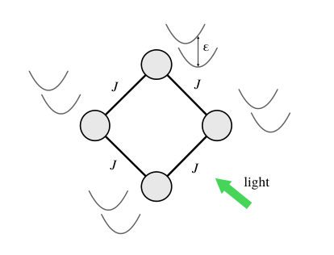
<figcaption class="paper-figure-caption"><b>Fig 1.</b> FIG. 1. A schematic view of the model.</figcaption>
</figure>
<figure class="paper-figure-card">
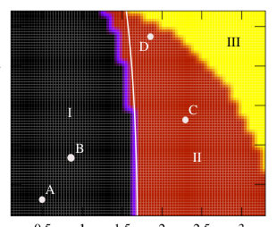
<figcaption class="paper-figure-caption"><b>Fig 2.</b> FIG. 2. Ground-state classification map. The regions I, II, and III correspond predominantly to N = 0, 1, and 2, respec- tively. The symbols A-D in the map indicate the four param- eter points used for the time traces in Fig. 5. The white line is calculated by the minimal variational polaron ansatz.</figcaption>
</figure>
<figure class="paper-figure-card">
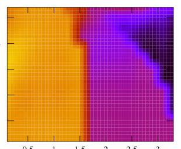
<figcaption class="paper-figure-caption"><b>Fig 3.</b> FIG. 3. Time-averaged QMI and absorbed-photon maps in the J-ν plane. (a) Ie,pn, (b) Ie,pt, and (c) Ipn,pt. (d) Time- averaged absorbed photon number N abs.</figcaption>
</figure>
<figure class="paper-figure-card">
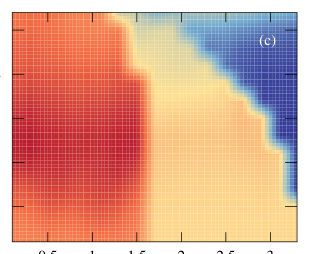
<figcaption class="paper-figure-caption"><b>Fig 4.</b> FIG. 4. Time-averaged subsystem entropies in the J-ν plane. (a) Se, (b) Spn, and (c) Spt.</figcaption>
</figure>
<figure class="paper-figure-card">

<figcaption class="paper-figure-caption"><b>Fig 5.</b> Figure 5 shows representative time traces of ηpn|e(t) and ηpt|e(t) at four parameter points marked in Fig. 2. At (J, ν) = (0.5, 0.3), the information partition changes rapidly during the early stage of the photon-induced dy- namics, and ηpt|e(t) remains dominant afterwards. This point therefore represents a photon-dominated response in region I, where the excitonic information is mainly shared with the photon subsystem during the coher-</figcaption>
</figure>
</div>

<p><strong>Summary.</strong> The research uses Quantum Mutual Information (QMI) to analyze how information is shared among excitons, phonons, and photons in a coherent light-matter system. It demonstrates that the transient state's correlation structure cannot be determined by measuring only optical absorption or static ground states. The key finding is a 'redistribution ridge' visible only through phonon-centered QMI, indicating a hidden quantum correlation pathway.</p>
<p><strong>Why it may be interesting.</strong> This work provides a sophisticated, correlation-based diagnostic tool (QMI) to distinguish subtle quantum correlations generated during light excitation from simple population transfer or static ground-state characterizations, which is crucial for understanding complex quantum materials.</p>
<details>
<summary>Detailed structure</summary>
<p><strong>Main problem.</strong> The study aims to characterize transient quantum states in light-matter systems by analyzing how correlations are dynamically partitioned among excitonic, phononic, and photonic degrees of freedom.</p>
<p><strong>Main result.</strong> Quantum Mutual Information (QMI) reveals a hidden 'redistribution ridge' structure in the phonon-centered information partition that is absent from both static ground-state maps and conventional optical absorption measurements.</p>
<p><strong>Method.</strong> The analysis employs subsystem-resolved Quantum Mutual Information (QMI) to quantify correlation partitioning during time evolution governed by the full Hamiltonian.</p>
<p><strong>Model / system.</strong> The model describes a coherent exciton–phonon–photon system on a lattice, incorporating excitonic hopping ($J$), exciton-phonon coupling ($
u$), and light-matter coupling ($\mu$).</p>
<p><strong>Key observables.</strong> Subsystem-resolved Quantum Mutual Information (QMI), subsystem entropies ($S_a$), and the redistribution ratio ($R_{pn}$).</p>
<p><strong>Important parameters / regimes.</strong> The dynamics are mapped in the $J-
u$ plane, varying excitonic delocalization ($J$) and exciton-phonon coupling ($
u$).</p>
<p><strong>Assumptions / limitations.</strong> Phonon and photon modes are treated as fully quantum mechanical, coherent subsystems participating in unitary dynamics (not environmental dissipation). The analysis is limited to a four-site model.</p>
<p><strong>Figures summary.</strong> Figures compare time-averaged QMI maps ($I_{e,pn}, I_{e,pt}, I_{pn,pt}$) with absorbed photon number maps; the key feature shown is the sharp ridge in $R_{pn}$ that distinguishes transient correlation from static properties.</p>
<p><strong>Paper structure.</strong> The paper progresses by first establishing the full quantum Hamiltonian and simulation framework. It then compares information partitioning derived from exciton-centered vs. phonon-centered QMI, culminating in the identification of the unique 'redistribution ridge' structure.</p>
</details>
<details>
<summary>Abstract</summary>
<p>We study transient information partition in a coherent exciton-phonon-photon system using subsystem-resolved quantum mutual information (QMI). By employing a model with excitonic, phononic, and photonic degrees of freedom, we analyze the dynamics in the $J$-$ν$ plane, where $J$ characterizes excitonic delocalization and $ν$ denotes the exciton-phonon coupling strength. By comparing time-averaged QMI maps with the absorbed photon number, we show that optical activity alone does not determine the character of the light-induced transient state. The exciton-centered information partition identifies a broad crossover between polariton-like and polaron-like transient responses, depending on whether excitonic information is mainly shared with the photon or phonon subsystem. In contrast, the phonon-centered partition reveals a sharper boundary-adjacent redistribution ridge near the boundary between the zero- and one-exciton ground-state sectors. This ridge is absent from both the ground-state sector map and the photon-absorption map, indicating that it is neither a static sector boundary nor an enhancement of optical absorption. A variational strength-function analysis connects the ridge to a region-II-like finite-energy polaronic excitation whose dominant spectral weight lies near the one-phonon energy, and thus the ridge represents a hidden transient correlation structure in which a limited amount of phonon-related information is preferentially shared with the photon subsystem before being predominantly allocated to exciton-phonon dressing. These results show that QMI-based information partition provides a correlation-based framework for characterizing coherent light-induced transient states in which optical and material degrees of freedom jointly participate quantum mechanically.</p>
</details>
<p><sub><a href="#top">↑ back to top</a></sub></p>

<p><a id="paper-2606.21813"></a></p>
<h3 id="prethermal-cooling-with-many-body-quantum-quenches"><a href="http://arxiv.org/abs/2606.21813v1">Prethermal cooling with many-body quantum quenches</a></h3>
<p><strong>Authors:</strong> Jacob F. Steiner, Mohammad Hafezi, Stefan Kehrein, Gil Refael<br>
<strong>Type:</strong> theory · <strong>Category:</strong> strongly correlated electrons · <strong>PDF:</strong> <a href="https://arxiv.org/pdf/2606.21813v1">https://arxiv.org/pdf/2606.21813v1</a><br>
<strong>Analysis basis:</strong> full PDF text, analyzed in chunks
<strong>Topic relevance:</strong> 🔥 <code>scars &amp; prethermalization</code> <strong>5/5</strong> · 🔥 <code>analog quantum simulation</code> <strong>4/5</strong> · 🔥 <code>non-equilibrium dynamics</code> <strong>4/5</strong> · <code>non-equilibrium universality</code> <strong>3/5</strong> · <code>Keldysh / 2PI / non-Gaussian methods</code> <strong>1/5</strong> · <code>driven-dissipative phase transition</code> <strong>1/5</strong> · <code>entanglement &amp; information structure</code> <strong>1/5</strong> · <code>methods for driven-dissipative</code> <strong>1/5</strong></p>
<div class="figure-strip-hint">↔ Scroll figures horizontally</div>
<div class="paper-figures-scroll">
<figure class="paper-figure-card">
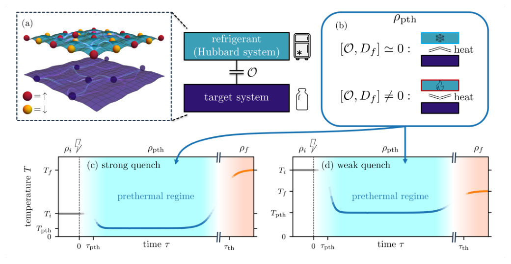
<figcaption class="paper-figure-caption"><b>Fig 1.</b> Figure 1. Prethermal cooling with quantum quenches. (a) Sketch of the setup. A Hubbard system, initialized in a thermal state ρi at temperature Ti, is subjected to a hopping quench t →gft = tf &lt; t and coupled to a target system through operators O. (b) For prethermal times τpth ≪τ ≪τth, the doublon number is effectively conserved. If the coupling operator also conserves doublon number, [O, Df] = 0, the target perceives the Hubbard system at the reduced temperature Tpth = g2 fTi. Local density and spin operators are examples of such couplings. If [O, Df] ̸= 0, as for a local hopping operator, the target does not generally perceive a well-defined reduced temperature and may instead be heated....</figcaption>
</figure>
<figure class="paper-figure-card">
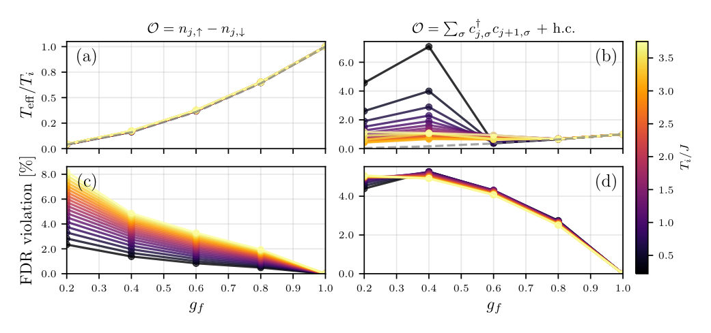
<figcaption class="paper-figure-caption"><b>Fig 2.</b> Figure 2. Numerical extraction of effective temperature from fluctuation-dissipation relation (FDR) for a one-dimensional Hubbard chain of length N, using the doublon number conserving coupling operator O = nj,↑−nj,↓[panels (a,c)] as well as the doublon number nonconserving operator O = P</figcaption>
</figure>
<figure class="paper-figure-card">
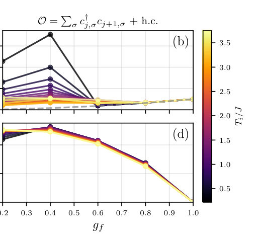
<figcaption class="paper-figure-caption"><b>Fig 3.</b> Fig. 2 shows the resulting extracted temperatures (first row) and FDR violations (second row) for a Hubbard chain of length N = 10 with periodic boundary con- ditions. We consider correlations of the approximately doublon-number conserving O = nj,↑−nj,↓(first col- umn) as well as of the doublon-number nonconserving O = P</figcaption>
</figure>
<figure class="paper-figure-card">
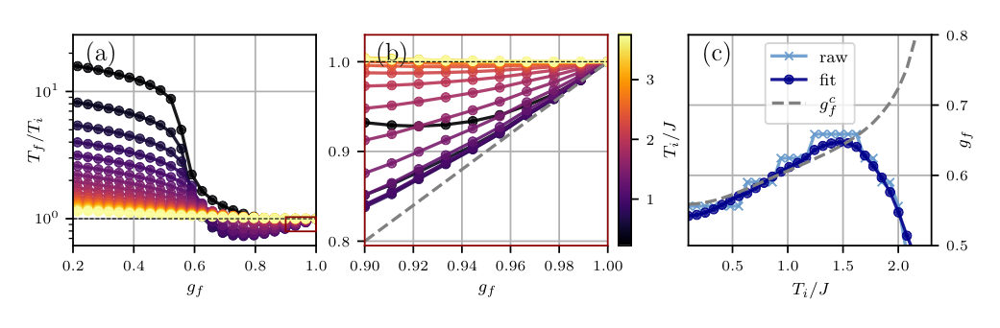
<figcaption class="paper-figure-caption"><b>Fig 4.</b> Figure 3. Asymptotic temperature after a quantum quench in the one-dimensional Hubbard model, obtained from the exact thermodynamic solution [59]. Panel (a) shows a wide range of gf values, while panel (b) shows a zoom-in on the weak-quench regime near gf = 1.0 together with the theoretical estimate from Eq. (43) (dashed gray line). The range shown in (b) is indicated by the red box in (a). The color scale in (a) and (b) denotes initial temperature, and is identical to that in Fig. 2. (c) Crossover point between the strong- and weak-quench regimes, determined from the maximum of |dTf/dgf|. The light-blue data points are obtained from the raw numerical derivative of the data shown in (a),...</figcaption>
</figure>
<figure class="paper-figure-card">
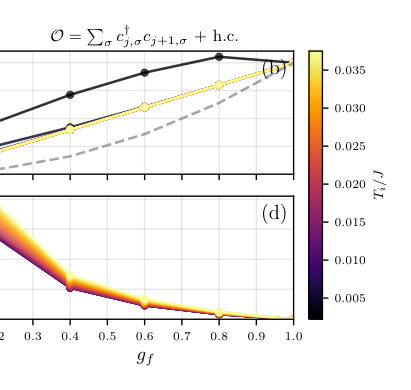
<figcaption class="paper-figure-caption"><b>Fig 5.</b> Figure 4. Parameters: U/t = 0.1, N = 10.</figcaption>
</figure>
</div>

<p><strong>Summary.</strong> The paper shows that performing specific quantum quenches on the fermionic Hubbard model can induce effective cooling rather than heating. This occurs because the quench energy is stored in long-lived high-energy excitations (doublons), leading to a measurable prethermal temperature reduction ($T_{pth} \propto g^2 T_i$). The protocol serves as a generalized quantum adiabatic demagnetization technique.</p>
<p><strong>Why it may be interesting.</strong> This work provides a concrete, controllable mechanism for achieving low entropy states in quantum simulators (like those based on Hubbard models) via non-equilibrium protocols, which is highly relevant to realizing quantum computation or simulating exotic phases of matter.</p>
<details>
<summary>Detailed structure</summary>
<p><strong>Main problem.</strong> The work investigates how quantum quenches can lead to effective cooling of low-energy degrees of freedom in strongly interacting many-body systems, counteracting the typical expectation of heating.</p>
<p><strong>Main result.</strong> It demonstrates that if the quench deposits energy into long-lived high-energy excitations (like doublons), an effective prethermal temperature ($T_{pth} \propto g^2 T_i$) can be established, acting as a quantum analogue to adiabatic demagnetization.</p>
<p><strong>Method.</strong> The analysis uses techniques like the Schrieffer-Wolff transformation and analyzes the system's evolution within a prethermal ensemble defined by conserving high-energy excitation numbers.</p>
<p><strong>Model / system.</strong> The primary model is the fermionic Hubbard model at half filling, analyzed in the strong coupling limit ($U \gg t$). The dynamics are studied via quenches of the hopping term $t$, leading to an effective Hamiltonian that conserves doublon number.</p>
<p><strong>Key observables.</strong> Effective prethermal temperature ($T_{pth}$), fluctuation-dissipation relation (FDR) adherence, and final thermalization temperature ($T_f$).</p>
<p><strong>Important parameters / regimes.</strong> Quench parameter $g$ (final hopping amplitude relative to initial), interaction strength $U$, and hopping term $t$. The prethermal timescale $ au_{pth}$ is exponentially long.</p>
<p><strong>Assumptions / limitations.</strong> The cooling mechanism relies on the existence of very long-lived excitations defining a prethermal timescale, and that the coupling operator conserves doublon number for the effective temperature to be well-defined.</p>
<p><strong>Figures summary.</strong> Figures illustrate the setup, showing how $T_{pth} = g^2 f T_i$ when doublon number is conserved. They also plot time dependence of effective temperature and compare results for conserving versus non-conserving coupling operators.</p>
<p><strong>Paper structure.</strong> The paper progresses from establishing the physical problem (cooling vs. heating) to deriving an effective Hamiltonian via Schrieffer-Wolff, calculating the prethermal state parameters using energy/number conservation, and finally verifying the cooling effect by analyzing the Two-Level System response and comparing theoretical limits.</p>
</details>
<details>
<summary>Abstract</summary>
<p>Many-body quantum quenches are typically associated with heating. In this work, we show that quantum quenches that perform positive work on the system can still lead to effective cooling of low-energy degrees of freedom if the quench energy is deposited in long-lived high-energy excitations. We discuss this explicitly for a quench of the hopping term t in the strong-coupling (U &gt;&gt; t) fermionic Hubbard model at half filling, where the quench induces a very long-lived non-equilibrium doublon density. The associated prethermal state persists for a time exponentially large in (U/t)^2. During this time window, we find an effective prethermal temperature that is reduced by the square of the ratio of final to initial hopping amplitude with respect to the initial temperature. This manifests as an effective fluctuation-dissipation relation that holds for doublon-number conserving operators. In a practical implementation the Hubbard system acts as a refrigerant to cool a target system provided the coupling conserves doublon number. Our protocol can be thought of as a quantum quench many-body generalization of adiabatic demagnetization.</p>
</details>
<p><sub><a href="#top">↑ back to top</a></sub></p>

<p><a id="paper-2606.23467"></a></p>
<h3 id="prethermal-rotating-frame-solid-echo-in-a-dipolar-nuclear-spin-network"><a href="http://arxiv.org/abs/2606.23467v1">Prethermal rotating-frame solid echo in a dipolar nuclear-spin network</a></h3>
<p><strong>Authors:</strong> Quentin Reynard-Feytis, William Beatrez, Leo Joon Il Moon, Emanuel Druga, Ashok Ajoy<br>
<strong>Type:</strong> both · <strong>Category:</strong> other · <strong>PDF:</strong> <a href="https://arxiv.org/pdf/2606.23467v1">https://arxiv.org/pdf/2606.23467v1</a><br>
<strong>Analysis basis:</strong> full PDF text, analyzed in chunks
<strong>Topic relevance:</strong> 🔥 <code>scars &amp; prethermalization</code> <strong>5/5</strong> · <code>driven-dissipative phase transition</code> <strong>3/5</strong> · <code>non-equilibrium dynamics</code> <strong>3/5</strong> · <code>QC/QI experiment</code> <strong>2/5</strong> · <code>spintronics-quantum-optics interface</code> <strong>2/5</strong> · <code>analog quantum simulation</code> <strong>1/5</strong> · <code>correlated / nonlocal dissipation</code> <strong>1/5</strong> · <code>exotic spin models in light-matter</code> <strong>1/5</strong> · <code>methods for driven-dissipative</code> <strong>1/5</strong> · <code>non-equilibrium universality</code> <strong>1/5</strong></p>
<div class="figure-strip-hint">↔ Scroll figures horizontally</div>
<div class="paper-figures-scroll">
<figure class="paper-figure-card">
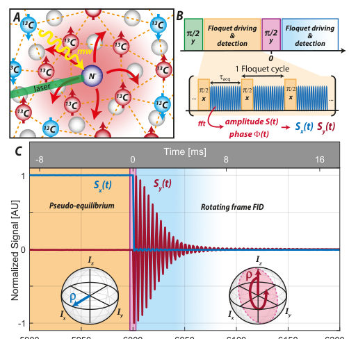
<figcaption class="paper-figure-caption"><b>Fig 1.</b> Fig. 1. Rotating-frame FID under Floquet prether- malization. (A) Platform. Hyperpolarized 13C nuclei in di- amond form a dilute 3D dipolar network (dashed couplings) via optically pumped NV centers (yellow). (B) Floquet drive and readout. A (π/2)x pulse prepares transverse magnetiza- tion, followed by a pulsed spin-locking train that both drives the system and enables cycle-resolved sampling of the Larmor precession between pulses; a subsequent (π/2)y pulse tips the prethermal magnetization to initiate the rotating-frame FID. (C) Dynamics. Sx(t) exhibits a long-lived prethermal plateau (yellow), while Sy(t) shows a rapidly dephasing oscillatory re- sponse after the tip pulse at t=0. Upper...</figcaption>
</figure>
<figure class="paper-figure-card">
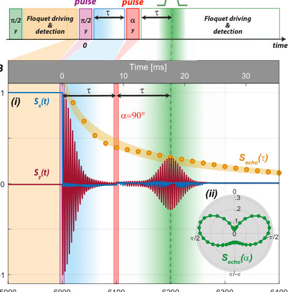
<figcaption class="paper-figure-caption"><b>Fig 2.</b> Fig. 2. Rotating-frame solid echo. (A) Protocol. Af- ter the tip pulse, the rotating-frame FID dephases for a de- lay τ; a single echo pulse (α)y then produces a revival at 2τ during continued Floquet driving and quasi-continuous detec- tion. (B) Echo formation and decay. Single-shot traces Sx(t) (blue) and Sy(t) (red) for α = 90◦applied at τ = 8.85 ms (100 Floquet cycles, shaded pink). The peak echo amplitude Secho (yellow points) decays with τ as a stretched exponential, yielding T ′ 2 = 13.4 ± 1.3 ms (shaded region: 95% confidence interval). Inset: Secho(α) is maximal near α ≃π/2, analogous to the conventional solid echo.</figcaption>
</figure>
<figure class="paper-figure-card">
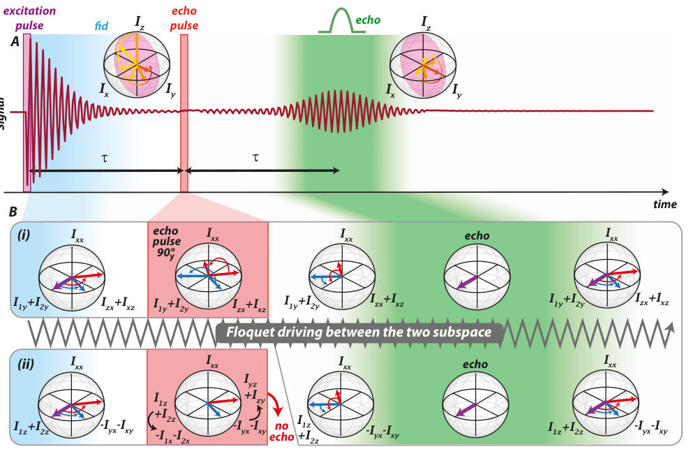
<figcaption class="paper-figure-caption"><b>Fig 3.</b> Fig. 3. Micromotion-assisted refocusing mechanism. (A) Pulse sequence (shaded) overlaid with the experimental Sy(t) trace from Fig. 2B, highlighting dephasing during the rotating-frame FID (blue) and revival at 2τ (green). (B) Minimal two-spin picture. Under the zeroth-order average Hamiltonian ∝Ixx, evolution alternates between two operator subspaces (i) and (ii) that are coupled by Floquet micromotion (grey). The (π/2)y pulse inverts only the Iy-coupled subspace, refocusing a subset of coherences into an echo while the complementary subspace does not refocus.</figcaption>
</figure>
<figure class="paper-figure-card">
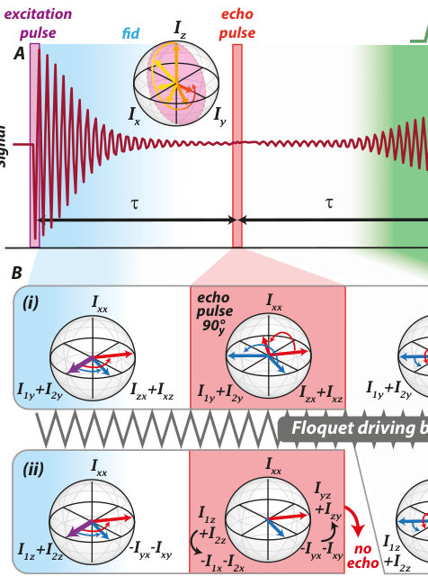
<figcaption class="paper-figure-caption"><b>Fig 4.</b> Fig. 4B tracks representative density-matrix components of a single spin pair over successive Floquet cycles. Even and odd cycles correspond to evolution in different subspaces (white/grey shading), producing periods of dephasing interleaved with intervals of approximate conservation. The echo pulse reverses the dephasing dynamics for the invertible components, resulting in an echo symmetric about the pulse time. Outlook—This experiment demonstrates the feasibility of designing NMR experiments in the rotating frame that closely mimic familiar lab-frame spin dynamics, while benefiting from quasi-continuous, cycle-resolved readout. Translating dynamics from the lab frame to the prether- mal...</figcaption>
</figure>
<figure class="paper-figure-card">
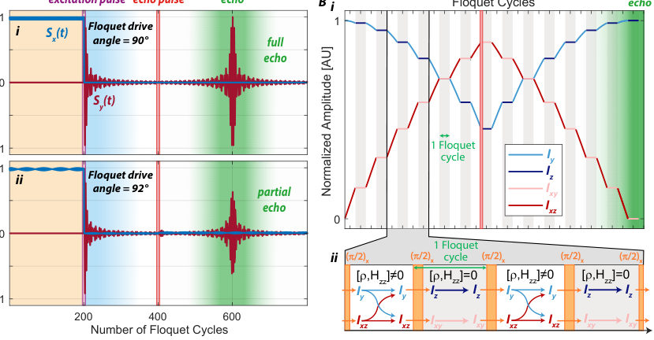
<figcaption class="paper-figure-caption"><b>Fig 5.</b> Fig. 4. Toy-model simulations reproduce the rotating-frame solid echo. (A) Simulated quadratures Sx(t) (blue) and Sy(t) (red) for an ensemble of 60 dipolar-coupled 13C spin pairs with uniformly distributed couplings (±5 kHz), using the experimental cycle timing and an α = 90◦echo pulse. Ideal 90◦drive pulses yield a strong symmetric revival at 2τ (i), whereas a small drive-angle error (92◦) mixes operator subspaces and reduces the refocused fraction (ii). (B) Representative density-matrix components for a single pair: alternating Floquet cycles correspond to commuting/noncommuting evolution (white/grey), and the echo pulse reverses the dephasing for the invertible components (zoom in, ii).</figcaption>
</figure>
</div>

<p><strong>Summary.</strong> The authors demonstrate a 'rotating-frame solid echo' using dipolar nuclear spins in diamond under pulsed driving. This effect translates classic refocusing physics into the prethermal regime by exploiting Floquet micromotion to selectively invert certain quantum coherences. The result establishes this system as a versatile platform for advanced quantum sensing and Hamiltonian control.</p>
<p><strong>Why it may be interesting.</strong> This work bridges classic solid-state NMR echo physics with modern concepts of non-equilibrium quantum dynamics (prethermalization) in driven many-body systems, suggesting a new platform for high-throughput spectroscopy and Hamiltonian engineering.</p>
<details>
<summary>Detailed structure</summary>
<p><strong>Main problem.</strong> The study aims to observe and analyze a solid echo phenomenon within the context of prethermalization in an interacting quantum spin system, translating classic echo physics into the rotating frame.</p>
<p><strong>Main result.</strong> A robust 'rotating-frame solid echo' was observed, characterized by signal revival at $2	au$ following a delay $   au$, with the decay envelope fitting a stretched exponential ($T'_2 \approx 13.4   ext{ ms}$).</p>
<p><strong>Method.</strong> The experiment uses pulsed spin-locking on a dipolar nuclear-spin network to create a prethermal plateau, followed by applying an $(\alpha)_y$ pulse and measuring signal revival.</p>
<p><strong>Model / system.</strong> The system is a hyperpolarized network of dipolar-coupled $^{13}	ext{C}$ nuclear spins in diamond. The dynamics are governed by the secular dipolar Hamiltonian under pulsed spin-locking, leading to an effective, approximately conserved prethermal Hamiltonian $ar{H}_F$.</p>
<p><strong>Key observables.</strong> Rotating-frame transverse magnetization ($S_x(t), S_y(t)$); echo amplitude decay envelope $S_{	ext{echo}}(	au)$; revival signal at time $2	au$.</p>
<p><strong>Important parameters / regimes.</strong> Echo decay time $T'_2 \approx 13.4 	ext{ ms}$; optimal pulse angle $\alpha \simeq \pi/2$; Floquet cycle period $  au_{FC} = 109 \mu   ext{s}$.</p>
<p><strong>Assumptions / limitations.</strong> The revival is attributed to Floquet micromotion transferring coherences between operator subspaces, allowing refocusing only for components coupled to $I_y$. Limitations arise from leakage into non-refocusable components due to pulse imperfections.</p>
<p><strong>Figures summary.</strong> Figures illustrate the rotating-frame FID under prethermalization (plateau), the solid echo protocol showing decay and revival, and theoretical/simulated diagrams explaining the refocusing mechanism across two coupled operator subspaces.</p>
<p><strong>Paper structure.</strong> The paper establishes the physical platform (dipolar spins in diamond) and the driving mechanism (pulsed spin-locking) to achieve a prethermal plateau. It then details the echo measurement protocol, presents experimental results showing revival, and finally provides analytical/simulation arguments explaining the refocusing via Floquet micromotion.</p>
</details>
<details>
<summary>Abstract</summary>
<p>Floquet prethermalization can endow interacting quantum solids with long-lived, approximately conserved quantities, enabling Hamiltonian engineering and new dynamical probes. Using a hyperpolarized network of dipolar-coupled $^{13}$C nuclear spins in diamond driven by pulsed spin-locking, we access a rotating-frame prethermal plateau with quasi-conserved transverse magnetization and cycle-resolved inductive readout. Within this prethermal manifold we observe a robust \emph{rotating-frame solid echo}: after an apparent decay of the rotating-frame free-induction signal over a delay $τ$, the magnetization revives at time $2τ$ following a single $(α)_y$ pulse, with maximum amplitude near $α\simeqπ/2$. The echo envelope decays as a stretched exponential with characteristic time $T_2'\approx 13\,$ms. Analytical arguments and toy-model simulations attribute the revival to Floquet micromotion that transfers coherences between operator subspaces, so that only a subset of the many-body dephasing dynamics is inverted by the $y$ pulse. These results translate classic echo physics into the prethermal rotating frame and point to continuously interrogated prethermal spin ensembles as a versatile platform for high-throughput spectroscopy, Hamiltonian engineering, and long-duration quantum sensing.</p>
</details>
<p><sub><a href="#top">↑ back to top</a></sub></p>

<p><a id="paper-2606.23619"></a></p>
<h3 id="thermodynamic-inference-from-noisy-single-molecule-time-series"><a href="http://arxiv.org/abs/2606.23619v1">Thermodynamic inference from noisy single-molecule time series</a></h3>
<p><strong>Authors:</strong> Todd R. Gingrich, Oleg A. Igoshin, Anatoly B. Kolomeisky, Dmitrii E. Makarov<br>
<strong>Type:</strong> theory · <strong>Category:</strong> statistical mechanics · <strong>PDF:</strong> <a href="https://arxiv.org/pdf/2606.23619v1">https://arxiv.org/pdf/2606.23619v1</a><br>
<strong>Analysis basis:</strong> full PDF text, analyzed in chunks
<strong>Topic relevance:</strong> 🔥 <code>quantum measurements</code> <strong>5/5</strong> · 🔥 <code>measurement-induced transitions</code> <strong>4/5</strong> · <code>methods for driven-dissipative</code> <strong>3/5</strong> · <code>non-equilibrium dynamics</code> <strong>3/5</strong> · <code>non-equilibrium universality</code> <strong>2/5</strong> · <code>Keldysh / 2PI / non-Gaussian methods</code> <strong>1/5</strong> · <code>correlated / nonlocal dissipation</code> <strong>1/5</strong> · <code>driven-dissipative phase transition</code> <strong>1/5</strong></p>
<div class="figure-strip-hint">↔ Scroll figures horizontally</div>
<div class="paper-figures-scroll">
<figure class="paper-figure-card">
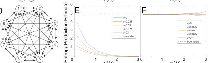
<figcaption class="paper-figure-caption"><b>Fig 1.</b> FIG. 1. Entropy production estimates calculations. (A-C) 20-node ring with 4 distinct rates (shown as arrows of differ- ent colors); (B) Direct first-order Markov estimation of en- tropy production from the noisy trajectories. (C) Entropy production calculated using the recovered transition-rate ma- trix computed with Eq. (18) (D-F) 8-node fully connected network. (E) Direct first-order Markov estimation of en- tropy production from the noisy trajectories. (F) Entropy production calculated using the recovered transition-rate ma- trix computed with Eq. (18). Different colors show different noise levels as indicated in the legends.</figcaption>
</figure>
<figure class="paper-figure-card">
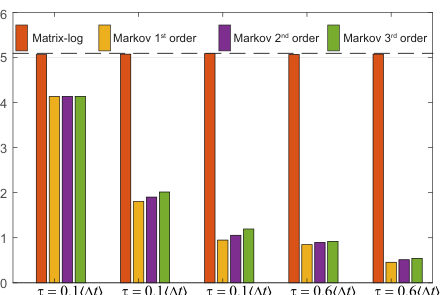
<figcaption class="paper-figure-caption"><b>Fig 2.</b> FIG. 2. Non-Markov entropy production estimates, Eq. (19), applied to the 8-state system and compared to the exact en- tropy production as well as to the corrected entropy produc- tion estimates.</figcaption>
</figure>
<figure class="paper-figure-card">
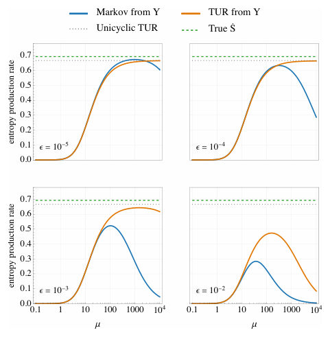
<figcaption class="paper-figure-caption"><b>Fig 3.</b> FIG. 4. Entropy production estimated from the photon color sequence as a function of the total photon arrival rate µ, for u = 2, w = 1, using the Markov estimator (Eq. (43)) and the TUR estimator (Eq. (46)). Panels correspond to in- creasing values of the per-emission error probability ϵ. The dashed green line is the true entropy production ⟨˙S⟩= ln 2 ≈ 0.693, and the dotted gray line is the unicyclic TUR bound 2(u−w)2/(u+w) ≈0.667 of Eq. (48)—the TUR estimate that a perfect observation of the motor’s own current would yield. The gap between this bound and ⟨˙S⟩is the intrinsic loose- ness of the TUR and is independent of the measurement; the gap between the TUR estimate and this bound is...</figcaption>
</figure>
</div>

<p><strong>Summary.</strong> This paper develops theoretical methods to estimate entropy production in molecular motors using noisy, time-resolved single-molecule tracking data. It rigorously compares multiple estimation strategies—including direct Markov estimators and bounds derived from fluctuation theorems—showing that noise fundamentally limits accuracy. The key takeaway is the necessity of advanced techniques, like non-Markovian inference or TUR analysis, to recover true thermodynamic quantities despite experimental limitations.</p>
<p><strong>Why it may be interesting.</strong> This work provides a rigorous framework for analyzing experimental data from non-equilibrium systems where measurements are inherently noisy. The focus on the interplay between measurement resolution and thermodynamic inference is crucial for interpreting single-molecule biophysics experiments.</p>
<details>
<summary>Detailed structure</summary>
<p><strong>Main problem.</strong> The core problem is systematically quantifying how measurement noise (finite spatial/temporal resolution) degrades the ability to estimate fundamental thermodynamic quantities, specifically entropy production ($\dot{S}$), from noisy single-molecule trajectories.</p>
<p><strong>Main result.</strong> Both standard inference strategies result in lower bounds on the true entropy production; furthermore, non-Markovian estimators are advantageous because noise can induce apparent non-Markovian dynamics even if the underlying process is Markovian.</p>
<p><strong>Method.</strong> The authors compare two main estimation strategies: (1) inferring the underlying kinetic matrix from noisy data, and (2) applying thermodynamic inference directly to the observed variable using high-order Markov estimators or fluctuation theorems (like TUR).</p>
<p><strong>Model / system.</strong> The analysis uses general stochastic processes modeled as continuous-time Markov chains ($X(t)$), applied specifically to molecular motors (e.g., F1FO ATPase) and diffusion processes, where the measurement yields a noisy observable $Y(t)$.</p>
<p><strong>Key observables.</strong> Entropy production rate ($\dot{S}$), effective current ($\langle j_Y 
angle$), and variance ($\langle \delta j_Y^2 
angle$).</p>
<p><strong>Important parameters / regimes.</strong> Measurement time interval ($    au$), noise magnitude ($\epsilon$), and the underlying transition rates of the system.</p>
<p><strong>Assumptions / limitations.</strong> The methods often assume knowledge or invertibility of the measurement error matrix $R$, which is a major limitation; alternatively, they rely on rigorous bounds like the Thermodynamic Uncertainty Relation (TUR).</p>
<p><strong>Figures summary.</strong> Figures compare various estimators ($\langle\dot{S}
angle_{Markov}$ vs. corrected/true values) across different noise levels and time resolutions for specific models (e.g., 8-state systems, random walks), showing performance degradation or recovery.</p>
<p><strong>Paper structure.</strong> The paper develops the problem by first establishing general theoretical bounds (KL divergence, TUR) and then applying these concepts to concrete physical examples like molecular motors and diffusion processes, comparing multiple estimation techniques systematically.</p>
</details>
<details>
<summary>Abstract</summary>
<p>Single-molecule or single-particle tracking measurements inherently yield noisy microscopic trajectories, often significantly constrained by the diffraction limit and by the finite rate at which photons are emitted and counted. Here we study systematically the resulting effects of finite spatial and temporal resolution on one's ability to discern and quantify the arrow of time in microscopic trajectories. Given an experimental time series Y(t) degraded by noise, we consider the problem of estimating the entropy production associated with the corresponding microscopic variable X(t) using two strategies. The first attempts to infer the statistical properties of X(t) from those of Y(t) before estimating the entropy production. The second uses the experimental observable as a proxy for the true microscopic observable, with the entropy production estimator applied directly to Y(t). We prove that both strategies result in lower bounds on the true entropy production. Importantly, noise-degraded observables Y(t) undergo non-Markovian dynamics even when X(t) are Markovian, and non-Markovian entropy production estimators are advantageous. We further note nontrivial interplay between spatial and temporal resolution: in the presence of detection noise, improving the temporal resolution alone may lead to poorer rather than better entropy production estimates.</p>
</details>
<p><sub><a href="#top">↑ back to top</a></sub></p>

<p><a id="paper-2606.22713"></a></p>
<h3 id="an-interpretable-closed-form-for-entanglement-entropy-from-bitstrings-guided-by-a-graph-neural-network"><a href="http://arxiv.org/abs/2606.22713v1">An interpretable closed form for entanglement entropy from bitstrings, guided by a graph neural network</a></h3>
<p><strong>Authors:</strong> Anas Saleh<br>
<strong>Type:</strong> both · <strong>Category:</strong> other · <strong>PDF:</strong> <a href="https://arxiv.org/pdf/2606.22713v1">https://arxiv.org/pdf/2606.22713v1</a><br>
<strong>Analysis basis:</strong> full PDF text, analyzed in chunks
<strong>Topic relevance:</strong> 🔥 <code>entanglement &amp; information structure</code> <strong>5/5</strong> · 🔥 <code>Rydberg arrays</code> <strong>4/5</strong> · 🔥 <code>analog quantum simulation</code> <strong>4/5</strong> · <code>methods for driven-dissipative</code> <strong>1/5</strong> · <code>non-equilibrium dynamics</code> <strong>1/5</strong></p>
<div class="figure-strip-hint">↔ Scroll figures horizontally</div>
<div class="paper-figures-scroll">
<figure class="paper-figure-card">
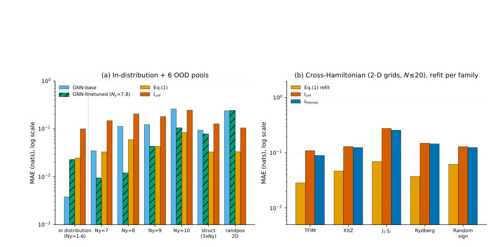
<figcaption class="paper-figure-caption"><b>Fig 1.</b> Figure 1: Headline summary. (a) MAE on the in-distribution eval pool and the six OOD pools for the base GNN ([5], sky blue), the fine-tuned GNN (bluish-green, hatched), the six-feature closed form Eq. 1 (orange), and the classical mutual information I (vermilion), log scale. The fine-tuned column is the published checkpoint fine-tuned in [5] for the Ny = 7, 8 ladder and applied unchanged; it is hatched because its strong results there reflect training targeted at that size regime, not the fit-once generalization of Eq. 1 and the base GNN—the like-for-like comparison is Eq. 1 versus the base GNN. Pools right of the separator are OOD relative to the GNN’s training distribution. Eq. 1 has...</figcaption>
</figure>
<figure class="paper-figure-card">
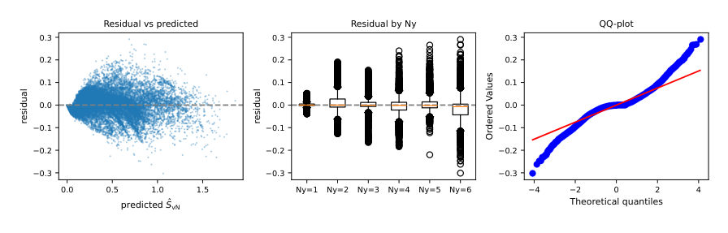
<figcaption class="paper-figure-caption"><b>Fig 2.</b> Figure 2: Eq. 1 residuals on the evaluation set. Left: residual versus predicted ˆ SvN—the spread widens with the prediction. Middle: residual by system size Ny—the interquartile range and tails grow with Ny. Right: quantile–quantile plot, confirming heavy tails. The dispersion concentrates at higher entropy, consistent with corr(|r|, S)=0.47.</figcaption>
</figure>
<figure class="paper-figure-card">
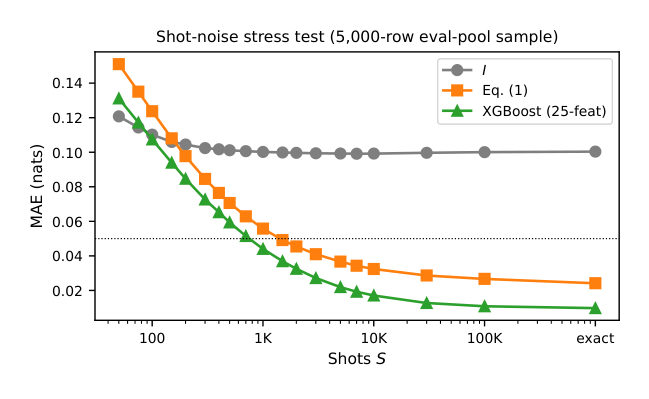
<figcaption class="paper-figure-caption"><b>Fig 3.</b> Figure 3: Shot-noise stress test on a random 5,000-row sample of the evaluation pool: MAE versus the number of measurement shots S for Eq. 1, XGBoost, and the mutual-information baseline I.</figcaption>
</figure>
<figure class="paper-figure-card">
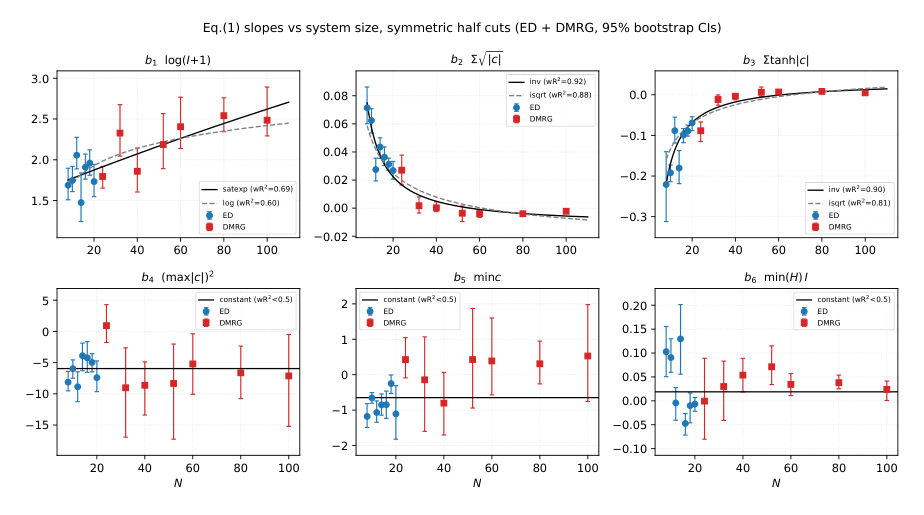
<figcaption class="paper-figure-caption"><b>Fig 4.</b> Figure 4: Eq. 1 slopes refit per size on the balanced half cut, ED (N =8–20, circles) and DMRG (N =24– 100, squares), with 95% bootstrap intervals; solid/dashed curves are the best and runner-up parametric laws by AICc (weighted R2 in the legends). The anchor slope b1 grows and curves downward; the two correlator-kernel slopes b2, b3 decay as 1/N (an inverse square root fits comparably); b4, b5 show no resolv- able trend; b6 vanishes beyond N ≈15.</figcaption>
</figure>
<figure class="paper-figure-card">
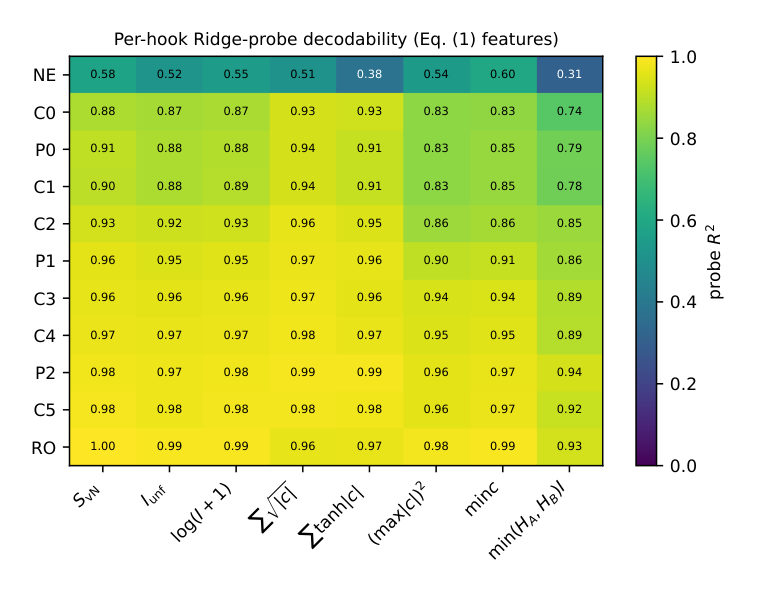
<figcaption class="paper-figure-caption"><b>Fig 5.</b> Figure 5: Held-out per-hook Ridge-probe R2 for SvN, I, and the six features. Peaks at the readout (R2 ≥0.996 for SvN, ≥0.92 for every feature).</figcaption>
</figure>
</div>

<p><strong>Summary.</strong> The paper introduces a novel, human-readable closed-form equation to estimate entanglement entropy from measurable bitstring data in quantum simulators. This form is derived by using advanced machine learning techniques (GNNs) only to guide feature selection, resulting in an estimator that balances the high accuracy of black-box models with the interpretability required for physical insight.</p>
<p><strong>Why it may be interesting.</strong> This work directly addresses the practical gap between highly accurate but opaque ML predictors (like GNNs) and simple analytic bounds. By creating an interpretable surrogate model, it provides a powerful tool for experimental quantum simulation groups working with Rydberg arrays.</p>
<details>
<summary>Detailed structure</summary>
<p><strong>Main problem.</strong> The core challenge is accurately estimating bipartite von Neumann entanglement entropy ($S_{vN}$) for quantum many-body systems, as direct measurement is prohibitively difficult.</p>
<p><strong>Main result.</strong> The authors propose a six-term linear closed form derived from bitstring-derivable physics scalars that achieves accuracy comparable to complex machine learning models while remaining human-interpretable and portable across different physical regimes.</p>
<p><strong>Method.</strong> The approach combines insights from Graph Neural Networks (GNNs) to guide feature selection, followed by an exhaustive symbolic search restricted to boundary correlators to derive a simple, linear equation.</p>
<p><strong>Model / system.</strong> The work is primarily demonstrated on quantum simulation platforms using Rydberg-atom arrays and analyzed for various 1D/2D lattice Hamiltonians (e.g., TFIM, XXZ).</p>
<p><strong>Key observables.</strong> Bipartite von Neumann entanglement entropy ($S_{vN}$), empirical bitstring distribution, classical mutual information ($I$), and two-point boundary correlators.</p>
<p><strong>Important parameters / regimes.</strong> System size ($N$ up to 100 atoms via DMRG), Mean Absolute Error (MAE) in nats, and the structure of the bipartition cut ($E_b$).</p>
<p><strong>Assumptions / limitations.</strong> The most informative features for $S_{vN}$ are localized to the two-point correlators on the bipartition boundary; furthermore, the closed form requires refitting its coefficients when extrapolating across different system sizes.</p>
<p><strong>Figures summary.</strong> Figures compare MAE across various models (GNN vs. Closed Form) on in-distribution and out-of-distribution pools, showing the closed form's robustness. Other figures detail scaling laws for the six feature coefficients derived from DMRG simulations.</p>
<p><strong>Paper structure.</strong> The paper progresses by first identifying the measurement bottleneck ($S_{vN}$), then using GNN analysis to pinpoint crucial boundary features, and finally deriving a simple linear combination of these features that maintains high accuracy across different physical models and system sizes.</p>
</details>
<details>
<summary>Abstract</summary>
<p>The empirical bitstring distribution is the most accessible observable on Rydberg-atom arrays, but the bipartite von~Neumann entropy it constrains is far costlier to obtain. We present a six-term linear closed form for the entropy, built on bitstring-derivable physics scalars, and characterize its accuracy, portability, scaling behaviour, and calibration cost. The feature set is selected with guidance from a trained graph neural network: probing the network localizes its entropy prediction to the two-point correlators on the bipartition boundary, and an exhaustive ground-truth search restricted to those boundary correlators isolates the form. It reaches $0.024$~nats mean absolute error in distribution: $6.4$ times the network's error, but in a form a human can read and apply without retraining. Fit once and applied unchanged, it has lower error than the base network on five of six out-of-distribution pools and ties the sixth. An independent density-matrix renormalization-group study to one hundred atoms -- five times the reach of exact diagonalization -- settles the size-extrapolation question: coefficients frozen at small size fail at scale, but the failure is structured. Refit per size the form holds to $25$--$50$~mnat (cross-validated); two of its six slopes follow clean inverse-size laws, one a downward curving growth, and the others are trendless; the fitted laws deploy the form label-free at roughly $40$--$80$~mnat. The result fixes a label-budget rule: at large sizes, a few dozen labels recalibrate the closed form to match a fine-tuned in-distribution ensemble on the same features, while nonlinear ML models pull ahead only given large labelled datasets.</p>
</details>
<p><sub><a href="#top">↑ back to top</a></sub></p>

<p><a id="paper-2606.23045"></a></p>
<h3 id="satellite-mission-planning-with-rydberg-atoms"><a href="http://arxiv.org/abs/2606.23045v1">Satellite Mission Planning with Rydberg Atoms</a></h3>
<p><strong>Authors:</strong> Michel Nowak, Benjamin Marchand, Yassine Naghmouchi, Serge Rainjonneau, Wesley Coelho, Louis Vignoli, Louis-Paul Henry<br>
<strong>Type:</strong> both · <strong>Category:</strong> other · <strong>PDF:</strong> <a href="https://arxiv.org/pdf/2606.23045v1">https://arxiv.org/pdf/2606.23045v1</a><br>
<strong>Analysis basis:</strong> full PDF text, analyzed in chunks
<strong>Topic relevance:</strong> 🔥 <code>Rydberg arrays</code> <strong>5/5</strong> · 🔥 <code>analog quantum simulation</code> <strong>4/5</strong> · <code>QC/QI experiment</code> <strong>2/5</strong> · <code>methods for driven-dissipative</code> <strong>1/5</strong></p>
<div class="figure-strip-hint">↔ Scroll figures horizontally</div>
<div class="paper-figures-scroll">
<figure class="paper-figure-card">
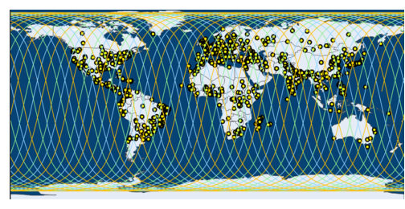
<figcaption class="paper-figure-caption"><b>Fig 1.</b> FIG. 1. Visualization of requests of cities’ observations and satel- lites’ trajectories on earth. Yellow dots represent random cities on Earth. The trajectories are Low Earth Orbit satellites. The goal of the scheduling task is to assign a request to each satellites.</figcaption>
</figure>
<figure class="paper-figure-card">
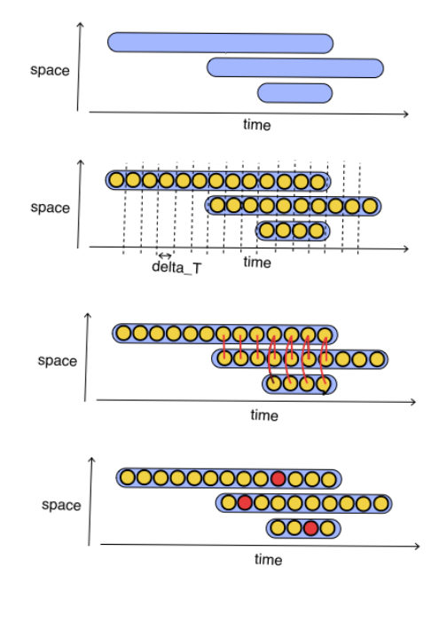
<figcaption class="paper-figure-caption"><b>Fig 2.</b> FIG. 2. Formulation of the Maximum Independent Set problem with the EDGES method starting from data take opportunities. (a) One blue satellite can take multiple requests in space during the some random time windows (for illustration). (b) We split time during one day from 0 seconds to 24 × 24 × 60 seconds. Each yellow dot repre- sent an opportunity time slot in which the observation can be made. It is mapped to an undirected graph (c) We add edges to this graph depending on the constraints. (d) we solve the Maximum Indepen- dent Set, thus retrieving independent and scheduoled opportunities for as many requests as possible.</figcaption>
</figure>
<figure class="paper-figure-card">
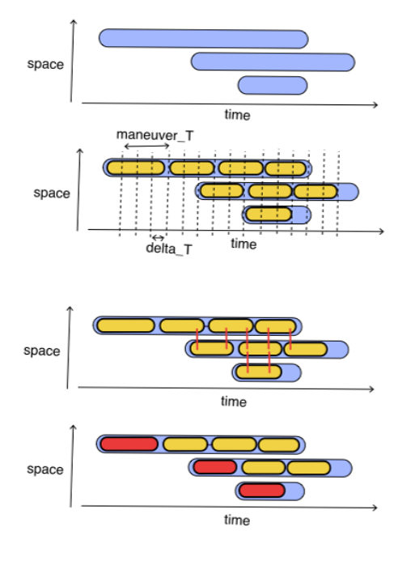
<figcaption class="paper-figure-caption"><b>Fig 3.</b> FIG. 3. DTO generation with agility constraint</figcaption>
</figure>
<figure class="paper-figure-card">

<figcaption class="paper-figure-caption"><b>Fig 4.</b> FIG. 4. Formulation of the Maximum Independent Set problem start- ing with the AGILE method from data take opportunities. (a) One blue satellite can take multiple requests in space during the some random time windows (for illustration). (b) We split time during one day from 0 seconds to 24 × 24 × 60 seconds. Each yellow dot rep- resent an opportunity time slot in which the observation can be made It is wider that with the edges method because we take into account the agility of the satellite. It is mapped to an undirected graph (c) We add edges to this graph depending on the constraints. (d) we solve the Maximum Independent Set, thus retrieving independent and sched- uled opportunities for...</figcaption>
</figure>
<figure class="paper-figure-card">
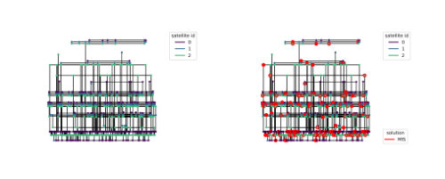
<figcaption class="paper-figure-caption"><b>Fig 5.</b> FIG. 5. Left: solving graph whose MIS needs to be extracted to retrieve a relevant plan respecting the planning constraints. Right: with Maximum Independent Set solution.</figcaption>
</figure>
</div>

<p><strong>Summary.</strong> The paper tackles the complex scheduling challenge of Earth Observation satellites by reformulating it as a Maximum Independent Set problem. This problem is then mapped onto a Quantum Processing Unit built with Rydberg atoms, utilizing the QUBO framework for solution. The research validates the potential utility of this quantum approach for solving practical optimization tasks in space mission planning.</p>
<p><strong>Why it may be interesting.</strong> This work is highly relevant because it applies advanced quantum simulation techniques (Ising/QUBO models) from AMO physics—specifically using Rydberg atom platforms—to solve a large-scale combinatorial optimization problem derived from real-world engineering challenges.</p>
<details>
<summary>Detailed structure</summary>
<p><strong>Main problem.</strong> The paper addresses Satellite Mission Planning, which is formulated as a complex scheduling optimization problem requiring maximizing completed observation requests under various physical constraints.</p>
<p><strong>Main result.</strong> The authors demonstrate that the problem can be mapped to a Maximum Independent Set (MIS) solvable on a QPU based on Rydberg atoms using the QUBO framework. While current time-to-solution is slower than classical methods, the approach shows potential for future speedup.</p>
<p><strong>Method.</strong> The core method involves formulating the scheduling constraints into an MIS problem and then mapping this graph problem onto the hardware constraints of a Rydberg atom QPU via the Quadratic Unconstrained Binary Optimization (QUBO) framework.</p>
<p><strong>Model / system.</strong> The physical platform is a Quantum Processing Unit (QPU) utilizing neutral Rydberg atoms, whose dynamics are modeled by an Ising Hamiltonian. The optimization is solved by minimizing the energy corresponding to the QUBO formulation of the MIS problem.</p>
<p><strong>Key observables.</strong> Total number of completed observation requests (Global Satisfaction Rate), Time to Solution, and adherence to physical constraints like energy consumption and slew time.</p>
<p><strong>Important parameters / regimes.</strong> The QPU size limit ($\sim 100$ nodes for subgraphs) dictates the need for decomposition routines; the comparison is made against classical solvers using various time discretization steps ($\Delta T$).</p>
<p><strong>Assumptions / limitations.</strong> Key assumptions include simplifying power consumption models and assuming that future hardware enhancements will overcome current time-to-solution overheads compared to classical methods.</p>
<p><strong>Figures summary.</strong> Figures illustrate the problem setup (satellite trajectories), the MIS formulation using different methods (EDGES/AGILE), the QUBO solving process, and benchmark plots comparing completion rates and solution times between quantum and classical solvers as the number of requests increases.</p>
<p><strong>Paper structure.</strong> The paper progresses from defining the complex Satellite Mission Planning problem to formulating it mathematically as an MIS. It then details mapping this to a QUBO solvable on Rydberg atoms, presenting comparative benchmarks against state-of-the-art classical algorithms, and concluding with feasibility analysis for operational use.</p>
</details>
<details>
<summary>Abstract</summary>
<p>Quantum computers relying on cold atoms are being built and promise a high flexibility in the way information in encoded into the physical system. In particular, the analog mode is spiking interest in the field of optimization as a classically intractable number of configurations can be tackled. In this work, we investigate a problem that requires every-day scheduling of critical tasks involving a large number of actors. Namely, fixing the planning for a Earth Observation satellite fleet composed of several of units exposed to a high density of targets to be scanned. We explore numerical schemes that convert the formulated problem into a cold-atoms friendly setup. We begin by a naive formulation of the Satellite Mission Planning problem without taking account for the agility of the satellites. We then extend the problem to take it into account based on the literature. By formulating the planning problem as a Maximum Independent Set problem, we are able to solve the problem with a QPU based on Rydberg atoms. We explore two ways of solving the MIS problem on the QPU, one relying on the graphs and on the Quadratic Unconstrained Binary Optimization Framework (QUBO). We show that the QUBO methodology is the most relevant and explore it more deeply with numerical experiments. We conclude on the potential utility of using a QPU to solve the Satellite Mission Planning problem in an operational context.</p>
</details>
<p><sub><a href="#top">↑ back to top</a></sub></p>

<p><a id="paper-2606.21758"></a></p>
<h3 id="feedback-controlled-magnon-atom-entanglement-and-photon-statistics"><a href="http://arxiv.org/abs/2606.21758v1">Feedback-Controlled Magnon-Atom Entanglement and Photon Statistics</a></h3>
<p><strong>Authors:</strong> Yiping Lu, Yulong Hu, Zhuzheng Han, Shirong Lin<br>
<strong>Type:</strong> theory · <strong>Category:</strong> other · <strong>PDF:</strong> <a href="https://arxiv.org/pdf/2606.21758v1">https://arxiv.org/pdf/2606.21758v1</a><br>
<strong>Analysis basis:</strong> full PDF text, analyzed in chunks
<strong>Topic relevance:</strong> 🔥 <code>analog quantum simulation</code> <strong>4/5</strong> · 🔥 <code>methods for driven-dissipative</code> <strong>4/5</strong> · 🔥 <code>quantum measurements</code> <strong>4/5</strong> · 🔥 <code>spintronics-quantum-optics interface</code> <strong>4/5</strong> · <code>Keldysh / 2PI / non-Gaussian methods</code> <strong>3/5</strong> · <code>correlated / nonlocal dissipation</code> <strong>3/5</strong> · <code>correlated cavity matter</code> <strong>3/5</strong> · <code>driven-dissipative phase transition</code> <strong>3/5</strong> · <code>entanglement &amp; information structure</code> <strong>3/5</strong> · <code>exotic spin models in light-matter</code> <strong>3/5</strong> · <code>Tavis-Cummings &amp; cavity-many-emitter</code> <strong>2/5</strong> · <code>non-equilibrium dynamics</code> <strong>2/5</strong> · <code>non-equilibrium universality</code> <strong>2/5</strong> · <code>interference shaping light</code> <strong>1/5</strong> · <code>measurement-induced transitions</code> <strong>1/5</strong> · <code>quantum optics experiment</code> <strong>1/5</strong></p>
<div class="figure-strip-hint">↔ Scroll figures horizontally</div>
<div class="paper-figures-scroll">
<figure class="paper-figure-card">
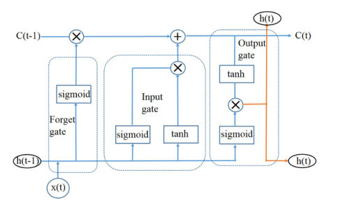
<figcaption class="paper-figure-caption"><b>Fig 1.</b> Figure 1. Structure of an LSTM unit. Here, C(t) is the cell state vector at time step t, C(t −1) is the cell state from the previous time step, h(t) is the hidden state vector at time step t, h(t −1) is the hidden state from the previous time step, and x(t) is the input vector at the current time step t. The sigmoid activation function outputs values between 0 and 1, determining how much information to pass through. The tanh activation function outputs values between −1 and 1, regularizing candidate values. × denotes point-wise multiplication (Hadamard product), and + denotes point-wise addition.</figcaption>
</figure>
<figure class="paper-figure-card">
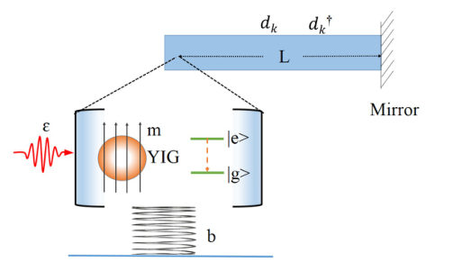
<figcaption class="paper-figure-caption"><b>Fig 2.</b> Figure 2. Realization of quantum feedback via a photonic waveg- uide. A magnon and a two-level emitter trapped in a small cavity in- teract with the photons inside the cavity. The driving field is weakly coupled to the cavity mode with frequency ωl. Part of the cavity loss is fed back into the cavity from the waveguide at a distance L from the cavity. Other losses are fed back into the cavity via the phonon, denoted by b and b†.</figcaption>
</figure>
<figure class="paper-figure-card">
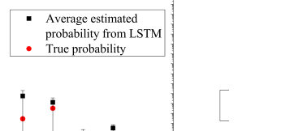
<figcaption class="paper-figure-caption"><b>Fig 3.</b> Figure 3. Probabilities predicted by the LSTM. The average value is calculated from ten predictions; the mean square error is denoted by the error bar. The true value is denoted by the red point.</figcaption>
</figure>
<figure class="paper-figure-card">
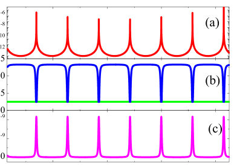
<figcaption class="paper-figure-caption"><b>Fig 4.</b> Figure 4. (a) Impact of feedback on the photon number. The photon number fluctuates periodically with increasing distance be- tween the cavity and mirror. (b) Impact of feedback on g(2)(0). The g(2)(0) function fluctuates periodically with increasing distance L. The case with feedback is denoted by the blue curve; the case without feedback is represented by the green curve. (c) Impact of feedback on the concurrence. The concurrence fluctuates period- ically with increasing L. The parameters are chosen as follows: κ = 5 × 10−6 × 0.4π THz = 2π × 1MHz, η = 5κ = 10π × 1MHz, ηa = 6 √</figcaption>
</figure>
<figure class="paper-figure-card">
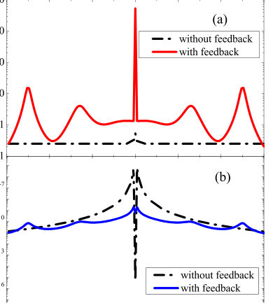
<figcaption class="paper-figure-caption"><b>Fig 5.</b> Figure 5. (a) Dependence of g(2)(0) on ∆at a fixed distance L be- tween the cavity and mirror (τ = 2π/ω0 = 0.009ns, L = τc/2 = 1.3627mm). (b) Behavior of the concurrence with a fixed distance for increasing ∆(τ = 2π/ω0 = 0.009ns, L = τc/2 = 1.3627mm). As a reference, the case without feedback is shown as a black dash- dotted line (τ = 0, L = 0). The parameters are chosen as follows: κ = 5 × 10−6 × 0.4π THz = 2π × 1MHz, η = 5κ = 10π × 1MHz, ηa = 6 √</figcaption>
</figure>
</div>

<p><strong>Summary.</strong> The paper introduces a theoretical framework for controlling complex hybrid magnonic systems using coherent feedback coupled with machine learning simulations. By analyzing observables like photon correlation and entanglement, the authors demonstrate that external feedback provides a powerful tool to actively switch between classical (bunched) and quantum (antibunched) light states while simultaneously manipulating internal quantum correlations.</p>
<p><strong>Why it may be interesting.</strong> This work is highly relevant as it merges advanced concepts from cavity QED (magnons, atoms), open quantum systems (feedback control), and modern computation (AI simulation) to achieve unprecedented levels of quantum control in solid-state platforms.</p>
<details>
<summary>Detailed structure</summary>
<p><strong>Main problem.</strong> The primary challenge is achieving precise quantum control in complex hybrid systems where solving the full dynamics governed by the Schrödinger equation is intractable.</p>
<p><strong>Main result.</strong> Coherent feedback allows for active, tunable engineering of quantum light statistics (bunching/antibunching) and magnon-atom entanglement simultaneously. The system exhibits periodic oscillations in these observables controlled by external parameters like cavity distance or detuning.</p>
<p><strong>Method.</strong> The authors employ a Long Short-Term Memory (LSTM) neural network to numerically propagate the probability amplitudes, enabling simulation of non-Markovian dynamics induced by feedback control.</p>
<p><strong>Model / system.</strong> The system is a hybrid magnonic platform involving coupled excitations: magnons, photons in an optical cavity, phonons, and an atom. The model incorporates time-delayed coherent feedback from an external waveguide mirror.</p>
<p><strong>Key observables.</strong> Photon-photon correlation function ($g^{(2)}(0)$), Concurrence (magnon-atom entanglement), Mean intracavity photon number ($\langle a^\dagger a 
angle$), Antibunching/Bunching characteristics.</p>
<p><strong>Important parameters / regimes.</strong> Cavity-mirror distance ($L$), Detuning ($\Delta$), Feedback strength ($G_0$), External drive field ($\Omega_e$).</p>
<p><strong>Assumptions / limitations.</strong> The analysis relies on truncating the state to a few-excitation subspace and using LSTM for simulation due to non-Markovian dynamics.</p>
<p><strong>Figures summary.</strong> Figures illustrate the structure of an LSTM unit, the physical setup involving magnon/atom/mechanical coupling with feedback, and show periodic oscillations of $g^{(2)}(0)$, $\langle a^\dagger a 
angle$, and concurrence as functions of distance or detuning.</p>
<p><strong>Paper structure.</strong> The paper first establishes the complexity necessitating ML simulation (LSTM). It then details the Hamiltonian for the coupled magnonic/atomic system with feedback. The core analysis focuses on calculating key observables ($g^{(2)}$, Concurrence) by varying external control parameters to demonstrate active quantum state engineering.</p>
</details>
<details>
<summary>Abstract</summary>
<p>Quantum systems face inherent challenges in achieving precise control, and solving the Schrödinger equation is often intractable for complex hybrid platforms. Here, for the first time, we introduce a magnon into a feedback-controlled quantum system. To solve the dynamics numerically and efficiently, we employ a Long Short-Term Memory network, a machine learning approach, to propagate the probability amplitudes to the steady state. By applying coherent feedback, we effectively stabilize the intracavity state. Our results reveal that the photon-photon correlation function and the concurrence, a measure of magnon-atom entanglement, exhibit periodic oscillations with the cavity-mirror distance, and that feedback significantly enhances both antibunching and bunching when the detuning is varied. These findings not only demonstrate the power of artificial intelligence in quantum dynamics simulation, but also open a promising route for on-demand quantum state engineering in hybrid magnonic systems, with potential applications in quantum networks and quantum information processing.</p>
</details>
<p><sub><a href="#top">↑ back to top</a></sub></p>

<p><a id="paper-2606.23451"></a></p>
<h3 id="dissipative-preparation-of-laughlin-like-states"><a href="http://arxiv.org/abs/2606.23451v1">Dissipative preparation of Laughlin-like states</a></h3>
<p><strong>Authors:</strong> Tong Liu<br>
<strong>Type:</strong> theory · <strong>Category:</strong> other · <strong>PDF:</strong> <a href="https://arxiv.org/pdf/2606.23451v1">https://arxiv.org/pdf/2606.23451v1</a><br>
<strong>Analysis basis:</strong> full PDF text, analyzed in chunks
<strong>Topic relevance:</strong> 🔥 <code>analog quantum simulation</code> <strong>4/5</strong> · 🔥 <code>methods for driven-dissipative</code> <strong>4/5</strong> · <code>correlated / nonlocal dissipation</code> <strong>3/5</strong> · <code>driven-dissipative phase transition</code> <strong>3/5</strong> · <code>exotic spin models in light-matter</code> <strong>3/5</strong> · <code>non-equilibrium dynamics</code> <strong>3/5</strong> · <code>Keldysh / 2PI / non-Gaussian methods</code> <strong>2/5</strong> · <code>Rydberg arrays</code> <strong>2/5</strong> · <code>non-equilibrium universality</code> <strong>2/5</strong> · <code>Kondo &amp; dissipative impurity</code> <strong>1/5</strong> · <code>correlated cavity matter</code> <strong>1/5</strong> · <code>entanglement &amp; information structure</code> <strong>1/5</strong> · <code>measurement-induced transitions</code> <strong>1/5</strong> · <code>quantum measurements</code> <strong>1/5</strong></p>
<div class="figure-strip-hint">↔ Scroll figures horizontally</div>
<div class="paper-figures-scroll">
<figure class="paper-figure-card">
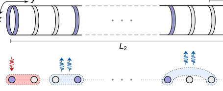
<figcaption class="paper-figure-caption"><b>Fig 1.</b> FIG. 1. A schematic of dissipative preparation of Laughlin- like states on a cylinder. After projection onto the lowest Landau levels, these states can be prepared by local loss and pump channels.</figcaption>
</figure>
<figure class="paper-figure-card">
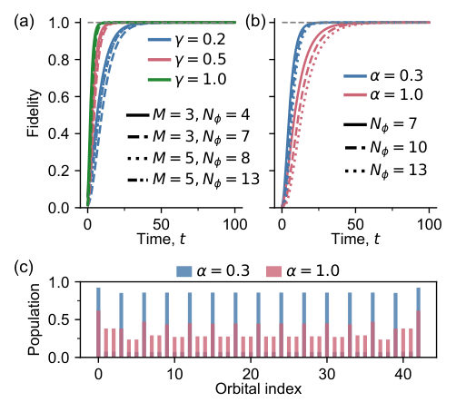
<figcaption class="paper-figure-caption"><b>Fig 2.</b> FIG. 2. Preparation of Laughlin-like states. (a) Prepa- ration of the TT state from the maximally mixed state for γ = 0.2 and 0.5. (b) Preparation of the Laughlin-like state Eq. (5) from the maximally mixed state for γ = 0.5 and M = 3. (c) Particle-population distribution of the Laughlin- like state for α = 0.3 and 1 at M = 3 and Nϕ = 43.</figcaption>
</figure>
<figure class="paper-figure-card">
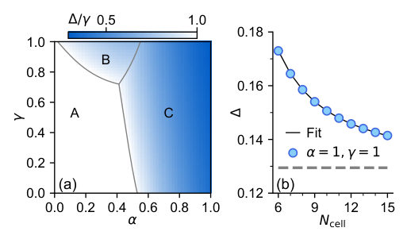
<figcaption class="paper-figure-caption"><b>Fig 3.</b> FIG. 3. Lindbladian gap ∆. (a) Gaps as a function of α and γ over 0 ≤α ≤1 and 0.02 &lt; γ ≤1, for M = 3 and Ncell = 12. (b) Gap versus Ncell with the fixed filling fraction 1/3 for α = 1 and γ = 1 (blue circles). The solid black line is a fit to ∆∞+ a/N b cell, with ∆∞= 0.129, a = 0.546, and b = 1.411. The dashed line indicates the asymptotic value ∆∞.</figcaption>
</figure>
<figure class="paper-figure-card">
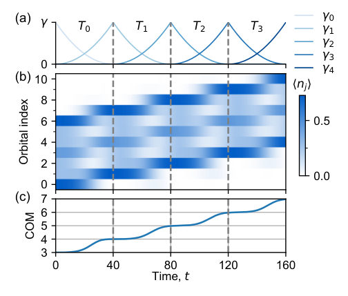
<figcaption class="paper-figure-caption"><b>Fig 4.</b> FIG. 4. Adiabatic pumping of a seven-orbital state. (a) Strengths of five pump tones as functions of time. (b) Adi- abatic pumping dynamics of the particle population for a seven-orbital Laughlin-like state at α = 0.8. (c) Evolution of the center-of-mass (COM) of the state.</figcaption>
</figure>
</div>

<p><strong>Summary.</strong> The paper proposes a novel dissipative protocol to prepare Laughlin-like states, which model Fractional Quantum Hall physics. By engineering local loss and pumping channels within the Lindbladian framework, the target state is shown to become the unique steady state attractor. This offers a feasible route for realizing and manipulating exotic quantum phases on near-term quantum simulators.</p>
<p><strong>Why it may be interesting.</strong> This work directly bridges concepts from strongly correlated electron systems (FQH states) with modern open quantum system techniques, providing a concrete, experimentally relevant pathway for simulating topological matter using controllable dissipation mechanisms common in AMO platforms like Rydberg arrays.</p>
<details>
<summary>Detailed structure</summary>
<p><strong>Main problem.</strong> The primary goal is developing a purely dissipative protocol to prepare Laughlin-like states, which are crucial for understanding Fractional Quantum Hall (FQH) physics and topological quantum computation.</p>
<p><strong>Main result.</strong> The authors show that the target Laughlin-like state can be established as the unique steady state of the Lindbladian evolution, with preparation time governed by a gap $\Delta$ that remains nonvanishing even in large systems.</p>
<p><strong>Method.</strong> The work employs open quantum system formalism using Lindblad master equations ($\mathcal{L}(
ho)$) incorporating local loss and pump channels to drive the system towards the desired steady state attractor.</p>
<p><strong>Model / system.</strong> The model concerns spin-polarized fermionic particles confined to the lowest Landau levels on a cylinder geometry. The dynamics are governed by a Lindbladian including pair-loss operators ($V_{m,j}, W_{m,j}$) and conditional pumping operators ($Q_j$).</p>
<p><strong>Key observables.</strong> Fidelity $F$, the Lindbladian gap $\Delta$, particle distribution uniformity, and total correlation function $h(d)$.</p>
<p><strong>Important parameters / regimes.</strong> Filling fraction ($
u=1/3$), loss rate ($\gamma$), pumping modulation parameter ($\alpha$), and system size ($N_{\phi}, L_1$).</p>
<p><strong>Assumptions / limitations.</strong> The protocol assumes the existence of local loss and pump channels that drive the system to a unique steady state, and approximations are made in eliminating fast reservoir dynamics.</p>
<p><strong>Figures summary.</strong> Figures illustrate schematic protocols on cylinders, fidelity evolution over time, particle distribution changes with parameters ($\alpha$), and detailed plots showing the dependence of the Lindbladian gap ($\Delta$) on various control parameters.</p>
<p><strong>Paper structure.</strong> The paper systematically develops the dissipative protocol by defining the Lindbladian, analyzing the spectral gap in different subspaces (diagonal/off-diagonal), demonstrating adiabatic pumping, and finally characterizing the resulting steady state using correlation functions.</p>
</details>
<details>
<summary>Abstract</summary>
<p>Fractional quantum Hall (FQH) states are a central paradigm of strongly correlated quantum matter and a key platform for topological quantum computation. Here, we propose a purely dissipative protocol based on local loss and pump channels for preparing Laughlin-like states at filling $1/3$, with a possible extension to other $1/M$ filling states. We show that Laughlin-like states are the exact steady states of the Lindbladian and can be reached from arbitrary initial states. We find that the Lindbladian gap bounded from below with increasing system size. We further demonstrate adiabatic pumping of a Laughlin-like state through slow modulation of the pump channels during the evolution. Our work opens a feasible route to preparing and manipulating FQH states on near-term quantum simulators.</p>
</details>
<p><sub><a href="#top">↑ back to top</a></sub></p>

<p><a id="paper-2606.22753"></a></p>
<h3 id="wigner-negative-magnon-steady-states-from-incoherent-qubit-pumping"><a href="http://arxiv.org/abs/2606.22753v1">Wigner-Negative Magnon Steady States from Incoherent Qubit Pumping</a></h3>
<p><strong>Authors:</strong> Yan Liu, Jiahua Li<br>
<strong>Type:</strong> theory · <strong>Category:</strong> other · <strong>PDF:</strong> <a href="https://arxiv.org/pdf/2606.22753v1">https://arxiv.org/pdf/2606.22753v1</a><br>
<strong>Analysis basis:</strong> full PDF text, analyzed in chunks
<strong>Topic relevance:</strong> 🔥 <code>methods for driven-dissipative</code> <strong>4/5</strong> · 🔥 <code>spintronics-quantum-optics interface</code> <strong>4/5</strong> · <code>correlated / nonlocal dissipation</code> <strong>3/5</strong> · <code>driven-dissipative phase transition</code> <strong>3/5</strong> · <code>exotic spin models in light-matter</code> <strong>3/5</strong> · <code>Tavis-Cummings &amp; cavity-many-emitter</code> <strong>2/5</strong> · <code>non-equilibrium dynamics</code> <strong>2/5</strong> · <code>Keldysh / 2PI / non-Gaussian methods</code> <strong>1/5</strong> · <code>QC/QI experiment</code> <strong>1/5</strong> · <code>analog quantum simulation</code> <strong>1/5</strong> · <code>correlated cavity matter</code> <strong>1/5</strong> · <code>non-equilibrium universality</code> <strong>1/5</strong></p>
<div class="figure-strip-hint">↔ Scroll figures horizontally</div>
<div class="paper-figures-scroll">
<figure class="paper-figure-card">
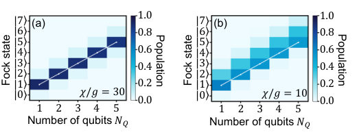
<figcaption class="paper-figure-caption"><b>Fig 1.</b> FIG. 2. Cascaded stabilization near selected magnon Fock states with multiple incoherently pumped qubits. The color maps show the numerical steady-state populations Pn versus the number of qubits NQ and the magnon number n. For each NQ, the qubits are tuned by ∆j = (NQ −2j −2)χ with j = 0, . . . , NQ −1, corresponding to ¯zk = +1. The white line marks the target relation n = NQ. Common parameters are ℘/g = 2, κ/g = 0.01, and γ/g = 0.05. (a) χ/g = 30. (b) χ/g = 10.</figcaption>
</figure>
<figure class="paper-figure-card">
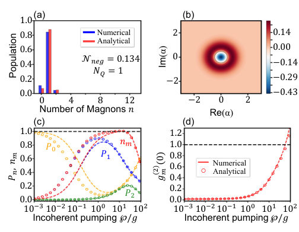
<figcaption class="paper-figure-caption"><b>Fig 2.</b> FIG. 1. Single-magnon steady state for one incoherently pumped qubit (NQ = 1). Common parameters are χ/g = 10, κ/g = 0.1, γ/g = 0.05, and ∆0/g = −10, such that |0, e⟩↔ |1, g⟩is resonant. (a, b) Results at ℘/g = 2: (a) magnon pop- ulations Pn, with blue and red bars denoting numerical and analytical results, respectively; (b) numerical Wigner func- tion W(α), with Nneg = 0.134. (c) P0, P1, P2, and nm versus ℘/g. (d) g(2) m (0) versus ℘/g. In (c, d), dashed curves and open circles denote numerical and analytical results, respec- tively. The black dashed lines in (c) and (d) mark nm = 1 and g(2) m (0) = 1, respectively.</figcaption>
</figure>
<figure class="paper-figure-card">
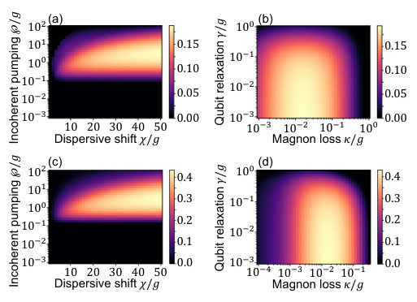
<figcaption class="paper-figure-caption"><b>Fig 3.</b> FIG. 4. Wigner negativity of the reduced magnon steady state. Color maps show the numerical integrated negativity Nneg for (a, b) NQ = 1, targeting |1⟩, and (c, d) NQ = 3, targeting |3⟩. Qubit detunings are set by ∆j = (NQ−2j−2)χ for j = 0, . . . , NQ −1. (a, c) Dependence on χ/g and ℘/g, with κ/g = 0.01 and γ/g = 0.05. (b, d) Dependence on κ/g and γ/g, with χ/g = 30 and ℘/g = 2.</figcaption>
</figure>
<figure class="paper-figure-card">
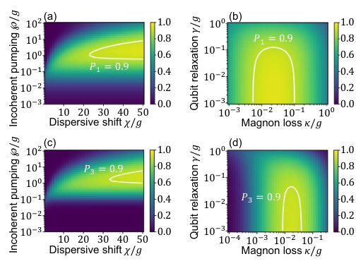
<figcaption class="paper-figure-caption"><b>Fig 4.</b> FIG. 3. Parameter dependence of the target Fock-state pop- ulation. The color maps show numerical steady-state popu- lations of the selected magnon Fock state. (a, b) Single-qubit case with target state |1⟩, showing P1. (c, d) Three-qubit case with target state |3⟩, showing P3. White contours mark P1 = 0.9 in (a, b) and P3 = 0.9 in (c, d). In the multi- qubit case, the qubits are tuned by ∆j = (NQ −2j −2)χ for j = 0, . . . , NQ −1. (a, c) Dependence on χ/g and ℘/g, with κ/g = 0.01 and γ/g = 0.05. (b, d) Dependence on κ/g and γ/g, with χ/g = 30 and ℘/g = 2.</figcaption>
</figure>
<figure class="paper-figure-card">
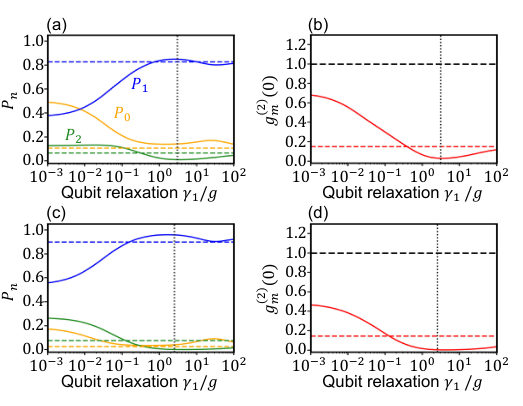
<figcaption class="paper-figure-caption"><b>Fig 5.</b> FIG. 5. Auxiliary-qubit-enhanced magnon blockade. Steady- state magnon populations Pn [(a), (c)] and equal-time correla- tion g(2) m (0) [(b), (d)] versus the auxiliary-qubit relaxation rate γ1/g. Solid curves show the two-qubit results, while colored dashed horizontal lines show the single-qubit case without qubit 1. In (a) and (c), blue, orange, and green curves denote P1, P0, and P2, respectively. The qubit detunings are chosen as ∆0 = −χ0 −χ1 and ∆1 = χ0 −3χ1. For the two-qubit re- sults, ℘1 = 0 and g0 = g1 = g. The parameters are χ0/g = 10, χ1/g = 7, ℘0/g = 3, κ/g = 0.1, and γ0/g = 0.05 in (a) and (b), and χ0/g = 30, χ1/g = 7, ℘0/g = 3, κ/g = 0.01, and γ0/g = 0.05 in (c) and (d). For...</figcaption>
</figure>
</div>

<p><strong>Summary.</strong> The paper demonstrates that incoherently pumping multiple coupled qubits can stabilize Wigner-negative magnon steady states. This is achieved through a cascaded dissipative mechanism that selectively populates high-number Fock components of the magnon mode. It establishes this process as a controllable resource for generating nonclassical quantum light in hybrid superconducting circuits.</p>
<p><strong>Why it may be interesting.</strong> This work provides a concrete, controllable dissipative engineering scheme for generating highly nonclassical quantum states (Wigner negativity) in solid-state platforms by leveraging engineered coupling mechanisms between qubits and magnons.</p>
<details>
<summary>Detailed structure</summary>
<p><strong>Main problem.</strong> The goal is to find an autonomous, number-selective method to generate Wigner-negative magnon steady states in hybrid quantum systems.</p>
<p><strong>Main result.</strong> Incoherent qubit pumping successfully stabilizes these nonclassical magnon states by creating a cascaded dissipative mechanism that directs the population toward specific high-Fock components.</p>
<p><strong>Method.</strong> The analysis uses master equations, rate-equation modeling (birth-death approach), and Wigner function diagnostics to track state evolution under dissipation.</p>
<p><strong>Model / system.</strong> The system couples multiple superconducting qubits ($N_Q$) incoherently pumped to a single magnon mode ($\hat{a}$). The dynamics are governed by an effective Hamiltonian derived via Schrieffer-Wolff transformations, leading to number-dependent dispersive shifts and activated sideband couplings.</p>
<p><strong>Key observables.</strong> Wigner negativity ($N_{	ext{neg}}$), magnon Fock state populations ($P_n$), antibunching signature ($g^{(2)}_m(0) < 1$).</p>
<p><strong>Important parameters / regimes.</strong> The mechanism requires dispersive selectivity ($\chi$) and intermediate pumping rates ($\mathcal{P}/g$); pure dephasing ($\gamma_\phi, \kappa_\phi$) degrades the state.</p>
<p><strong>Assumptions / limitations.</strong> The analysis relies on perturbative transformations (Schrieffer-Wolff) to derive effective Hamiltonians and uses rate equations as an idealized benchmark for population dynamics.</p>
<p><strong>Figures summary.</strong> Figures illustrate single-magnon steady states showing antibunching/negativity, multi-qubit cascades mapping $P_n$ vs. $N_Q$, and parameter space plots correlating $N_{	ext{neg}}$ with target population stabilization.</p>
<p><strong>Paper structure.</strong> The paper builds from establishing the full master equation model to deriving an effective Hamiltonian via perturbative methods, then analyzing the steady-state populations using rate equations, and finally confirming nonclassicality through Wigner function diagnostics across varying loss/dephasing regimes.</p>
</details>
<details>
<summary>Abstract</summary>
<p>We show that incoherently pumped qubits can realize a cascaded dissipative mechanism for stabilizing Wigner-negative magnon steady states. The mechanism combines qubit pumping with dispersive magnon-number selectivity to direct the steady-state population toward selected magnon Fock states. In the single-qubit case, the single-magnon population can approach unity, accompanied by strong antibunching and pronounced Wigner negativity. Extending the same principle to multiple qubits yields Wigner-negative steady states dominated by higher magnon Fock components. We further derive an analytical birth--death model that captures the mechanism and agrees with numerical results. These results establish incoherent qubit pumping as a controllable dissipative resource for generating nonclassical magnon states in hybrid quantum systems.</p>
</details>
<p><sub><a href="#top">↑ back to top</a></sub></p>

<p><a id="paper-2606.21675"></a></p>
<h3 id="instabilities-of-the-continuous-superradiant-laser"><a href="http://arxiv.org/abs/2606.21675v1">Instabilities of the continuous superradiant laser</a></h3>
<p><strong>Authors:</strong> Bruno Laburthe-Tolra, Martin Robert-de-Saint-Vincent, Benjamin Pasquiou<br>
<strong>Type:</strong> theory · <strong>Category:</strong> other · <strong>PDF:</strong> <a href="https://arxiv.org/pdf/2606.21675v1">https://arxiv.org/pdf/2606.21675v1</a><br>
<strong>Analysis basis:</strong> full PDF text, analyzed in chunks
<strong>Topic relevance:</strong> 🔥 <code>superradiant laser</code> <strong>4/5</strong> · <code>Tavis-Cummings &amp; cavity-many-emitter</code> <strong>3/5</strong> · <code>driven-dissipative phase transition</code> <strong>3/5</strong> · <code>methods for driven-dissipative</code> <strong>3/5</strong> · <code>Dicke superradiance</code> <strong>2/5</strong> · <code>correlated cavity matter</code> <strong>2/5</strong> · <code>non-equilibrium universality</code> <strong>2/5</strong> · <code>Keldysh / 2PI / non-Gaussian methods</code> <strong>1/5</strong> · <code>analog quantum simulation</code> <strong>1/5</strong> · <code>correlated / nonlocal dissipation</code> <strong>1/5</strong> · <code>non-equilibrium dynamics</code> <strong>1/5</strong></p>
<div class="figure-strip-hint">↔ Scroll figures horizontally</div>
<div class="paper-figures-scroll">
<figure class="paper-figure-card">
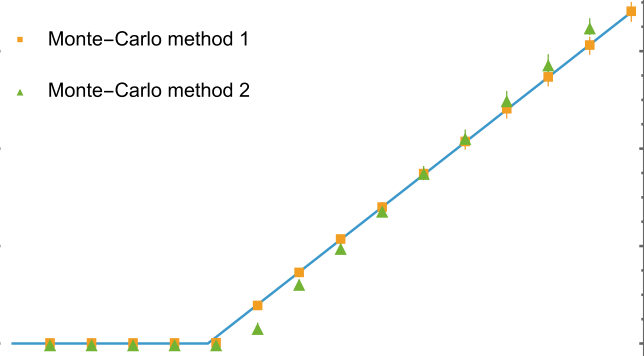
<figcaption class="paper-figure-caption"><b>Fig 1.</b> Figure 1: Steady-state superradiant laser power as a function of atom number N inside the cavity mode. Yellow squares are the results of Monte-Carlo simulations using the random choice method 1, see main text, while green triangles are the results using method 2. The blue line is the analytical formula from Ref. [9] (eq. 29-30). The parameters for all these results are g/2π = 1/2, κ/2π = 6, and ΓR/2π = 4. The cavity photon number is calculated by averaging the last 20 percent of the simulated dynamics, running for a total time 60/ΓR. For each point, the error bars show the standard deviation obtained from 140 Monte-Carlo realizations.</figcaption>
</figure>
<figure class="paper-figure-card">
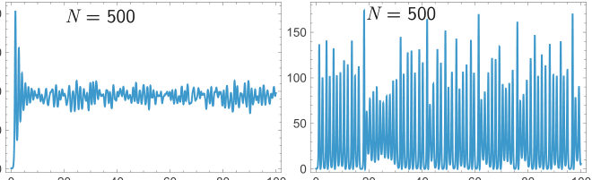
<figcaption class="paper-figure-caption"><b>Fig 2.</b> Figure 2: Examples of superradiant laser dynamics. Left column: g/2π = 1, κ/2π = 10, ΓR/2π = 3.9; right column: g/2π = 0.65, κ/2π = 10, ΓR/2π = 1.65. Both cases have the same critical atom number for lasing (Nc = ΓRκ/2g2 ≈20). The left column correspond to the stable case (κ &lt; 4ΓR) and the right column to the unstable case (κ &gt; 4ΓR). In the latter case,</figcaption>
</figure>
<figure class="paper-figure-card">
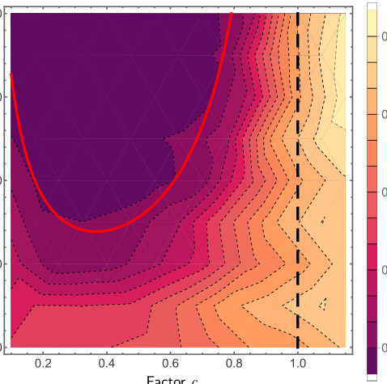
<figcaption class="paper-figure-caption"><b>Fig 3.</b> Figure 3: We plot the instability witness (see main text), as a function of the atom number and the instability parametrization factor c, with g/2π = √c/2, κ/2π = 4, ΓR/2π = c. The parametrization is chosen so that the atom number threshold for lasing (Nc = ΓRκ/2g2 ≈6) is independent of c. The black dashed line shows the limit 4ΓR = κ above which the laser is always stable, irrespective of atom number (right side). The red line depicts the critical atom number N ∗ c for the instability to develop as a</figcaption>
</figure>
<figure class="paper-figure-card">
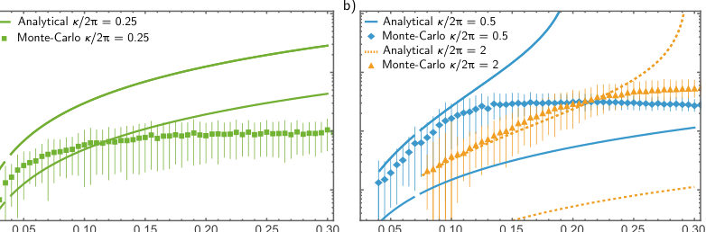
<figcaption class="paper-figure-caption"><b>Fig 4.</b> Figure 4: Superradiant laser intensity fluctuations in the stable regime. We plot the relative intensity noise Var(b)/⟨b⟩2 as a function of g for three values of κ and for ΓR/2π = 0.1, N = 20. a) In the regime with ΓR &lt; κ &lt; 4ΓR, shown for κ/2π = 0.25, the laser is stable and the intensity fluctuations observed in the Monte-Carlo simulations (green squares) roughly follow the ones arising from one of the eigenvalues γi (green straight lines) given by our simplified model (see Eq. 18). b) In the regime with κ &gt; 4ΓR, we plot the Monte-Carlo simulation results for the cases κ/2π = 0.5 (blue diamonds) and κ/2π = 2 (orange triangles) along with their analytical counterparts (straight blue lines...</figcaption>
</figure>
<figure class="paper-figure-card">
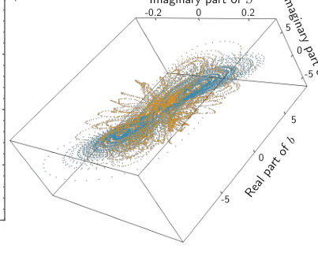
<figcaption class="paper-figure-caption"><b>Fig 5.</b> Figure 5: Trajectories during the superradiant laser dynamics, in the unstable regime. a, b) We represent the real part of the photon field b versus the imaginary part of atomic coherences S−. The laser parameters are N = 400, g/2π = √c/2, κ/2π = 3, ΓR/2π = c, with c = 0.22. The panel a) gives the mean-field approximation version and panel b) the version where we take into account atomic variable fluctuations using the TWA approximation (see main text). Insets show the same trajectories for the real and imaginary part of b, highlighting the effect of fluctuations on its phase. Panel c) shows the same two trajectories with the imaginary part of b as a third axis.</figcaption>
</figure>
</div>

<p><strong>Summary.</strong> The paper rigorously investigates the stability boundaries of a superradiant laser operating in an atomic cavity. It demonstrates that while the system can enter chaotic regimes analogous to fluid turbulence, these instabilities severely degrade its performance as a frequency reference due to phase drift. However, the authors also map out conditions for stable, regular self-pulsing oscillations, offering pathways to control this complex quantum optical system.</p>
<p><strong>Why it may be interesting.</strong> This work is highly relevant as it bridges quantum optics (superradiance/lasing) with nonlinear dynamics (chaos theory). The detailed analysis of phase drift versus amplitude fluctuations provides crucial guidelines for engineering robust quantum sensors and clocks based on cavity QED systems.</p>
<details>
<summary>Detailed structure</summary>
<p><strong>Main problem.</strong> The study investigates the intensity stability of a superradiant laser, determining the conditions under which it remains stable for use as an active optical clock versus when it develops chaotic behavior.</p>
<p><strong>Main result.</strong> The superradiant laser can become unstable and exhibit chaotic dynamics when the photon lifetime is significantly shorter than the atomic lifetime ($\kappa > 4\Gamma_R$ and $N > N^*_c$). However, a regular self-pulsing regime exists at very large atom numbers.</p>
<p><strong>Method.</strong> The authors employed mean-field approximations, linear stability analysis (eigenvalue calculation), Monte Carlo simulations, and mapping the dynamics to known chaotic systems like the Lorenz model.</p>
<p><strong>Model / system.</strong> The system models a continuous beam of atoms in an electronically excited state interacting with a high-finesse Fabry-Perot cavity. The dynamics are governed by coupled rate equations for the cavity field and atomic coherences, incorporating photon loss ($\kappa$) and atomic decay rates ($\Gamma_R$).</p>
<p><strong>Key observables.</strong> Intensity fluctuations, laser linewidth ($\Delta
u$), photon number ($n$), and coherence expectation values ($\langle b 
angle$, $\langle S_{\pm} 
angle$).</p>
<p><strong>Important parameters / regimes.</strong> The ratio of cavity loss rate to atomic decay rate ($\kappa$ vs $4\Gamma_R$), the critical atom numbers ($N_c, N^*_c$), and the relative timescales between photon and atomic lifetimes.</p>
<p><strong>Assumptions / limitations.</strong> The analysis heavily relies on mean-field approximations. Furthermore, advanced fluctuation analyses required assuming Gaussian white noise or using specific time-coarse-graining techniques that break down in certain regimes.</p>
<p><strong>Figures summary.</strong> Figures illustrate the transition from stable (low $\kappa$) to unstable/chaotic dynamics (high $\kappa$), showing intensity oscillations and phase drift. Later figures compare analytical models of self-pulsing against numerical simulations, confirming regular periodic behavior under specific conditions.</p>
<p><strong>Paper structure.</strong> The paper progresses by first establishing the mean-field model and identifying instability criteria ($\kappa > 4\Gamma_R$). It then analyzes the resulting chaotic dynamics, comparing them to turbulence theory. Finally, it refines the analysis by calculating linewidths using fluctuation theories (TWA) and identifying a separate, stable self-pulsing regime at large atom numbers.</p>
</details>
<details>
<summary>Abstract</summary>
<p>We investigate the intensity stability of the superradiant laser. Our study focuses on the architecture where a continuous beam of atoms in an electronically excited state crosses the mode of a high-finesse Fabry-Perot cavity, which has been proposed as a new architecture of an active optical clock. We show that such superradiant laser can become unstable and develop chaotic behavior. We derive an analytical criterion for this instability and find that it may only occur when the lifetime of photons in the cavity is significantly shorter than the lifetime of atoms. This criterion allows for refining the necessary parameters to run a superradiant laser as a frequency reference in the optical domain. In particular, we point-out the consequences of the instability on intensity fluctuations and laser linewidth. On the other hand, we also point out that the superradiant laser, when in the unstable regime, can become an interesting playground for studying chaos. At the mean-field level, there is a direct mapping to the Bénard instability associated with fluid turbulence; however quantum fluctuations associated with photon out-coupling and atom re-filling substantially modify the expected behaviors. Finally, we point-out the existence of a regular self-pulsing regime at large atom numbers.</p>
</details>
<p><sub><a href="#top">↑ back to top</a></sub></p>

<p><a id="paper-2606.22284"></a></p>
<h3 id="pairing-induced-bloch-oscillations-in-an-interacting-kitaev-chain"><a href="http://arxiv.org/abs/2606.22284v1">Pairing-induced Bloch oscillations in an interacting Kitaev chain</a></h3>
<p><strong>Authors:</strong> E. S. Ma, Z. Song<br>
<strong>Type:</strong> theory · <strong>Category:</strong> strongly correlated electrons · <strong>PDF:</strong> <a href="https://arxiv.org/pdf/2606.22284v1">https://arxiv.org/pdf/2606.22284v1</a><br>
<strong>Analysis basis:</strong> full PDF text, analyzed in chunks
<strong>Topic relevance:</strong> 🔥 <code>analog quantum simulation</code> <strong>4/5</strong> · 🔥 <code>non-equilibrium dynamics</code> <strong>4/5</strong> · <code>non-equilibrium universality</code> <strong>3/5</strong> · <code>driven-dissipative phase transition</code> <strong>2/5</strong> · <code>entanglement &amp; information structure</code> <strong>2/5</strong> · <code>methods for driven-dissipative</code> <strong>2/5</strong> · <code>Frenkel-Kontorova</code> <strong>1/5</strong> · <code>Keldysh / 2PI / non-Gaussian methods</code> <strong>1/5</strong> · <code>correlated / nonlocal dissipation</code> <strong>1/5</strong> · <code>exotic spin models in light-matter</code> <strong>1/5</strong> · <code>scars &amp; prethermalization</code> <strong>1/5</strong></p>
<div class="figure-strip-hint">↔ Scroll figures horizontally</div>
<div class="paper-figures-scroll">
<figure class="paper-figure-card">
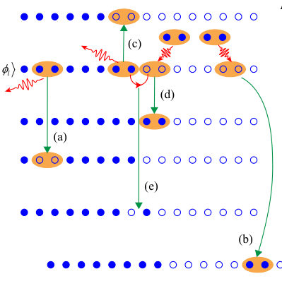
<figcaption class="paper-figure-caption"><b>Fig 1.</b> FIG. 1. The illustration of the effectiveness of Heff in the subspace {|ϕl⟩}. For a given basis |ϕl⟩, where l sites on the left of the chain are occupied by fermions (solid blue cir- cles) and the rest of the sites are empty (hollow blue circles), there are five cases when the Hamiltonian HT in Eq. (2) acts on it. The right energy axis marks the corresponding energy change. (a) and (b) denote the pairing-elimination and pairing-creation processes that transform this state into another subspace, with the corresponding energy change un- der HV being −4U ± 2µ; (c) and (d) represent the pairing- elimination and pairing-creation that preserve the subspace and shift the energy by ±2µ; (e) shows...</figcaption>
</figure>
<figure class="paper-figure-card">
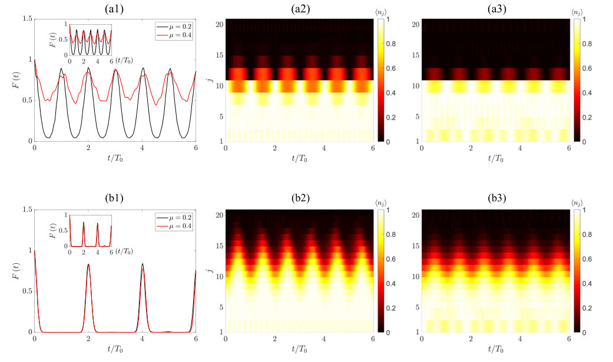
<figcaption class="paper-figure-caption"><b>Fig 2.</b> FIG. 2. Plots of the fidelity defined in Eq. (22) and the average value of the particle number operator given in Eq. (23) for two kinds of initial states. Panels (a1) and (b1) display the fidelity for the Kronecker-delta initial state and Gaussian-type initial state with different on-site potentials, respectively, where the other parameters for the Hamiltonian are U = 1, τ = 0.2, ∆= 0.2, and N = 20. For the Kronecker-delta initial state, l0 = N/2, and for the Gaussian-type initial state, α = 5. The insets in (a1) and (b1) show the cases for U = 1, τ = 0.8, and ∆= 0.2. Here, T0 = π/µ is the theoretical period of the Bloch Oscillation, and it is distinct for different parameter settings of µ....</figcaption>
</figure>
<figure class="paper-figure-card">
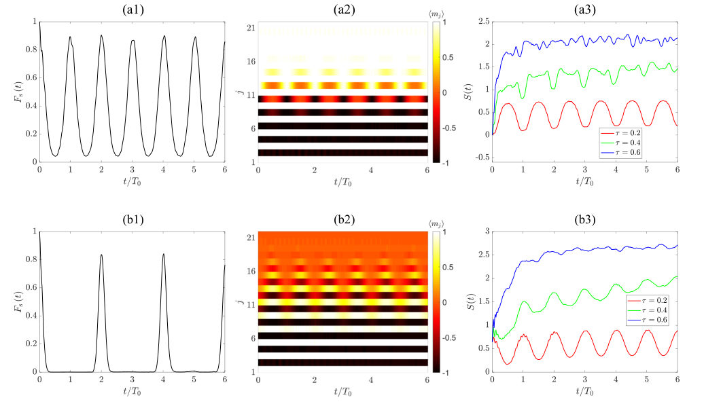
<figcaption class="paper-figure-caption"><b>Fig 3.</b> FIG. 3. Plots of fidelity defined in Eq. (24), local magnetization given by Eq. (26), and entanglement entropy given by Eq. (27) in the corresponding spin model given by Eq. (10) of the Kitaev model with ∆= τ. Panels (a1), (a2), and (a3) correspond to the Kronecker-delta initial state, and panels (b1), (b2), and (b3) correspond to the Gaussian-type initial state. Other parameters are U = 1, τ = 0.2, µ = 0.2 and N = 21. These results indicate that the entanglement entropy oscillates around a small value with period T0 = π/µ for small τ. However, it increases for large τ and remains at an approximately fixed value due to the finite-N effect.</figcaption>
</figure>
</div>

<p><strong>Summary.</strong> This work investigates the complex dynamics of an interacting Kitaev chain subjected to nearest-neighbor interactions. The key finding is that these interactions induce Bloch oscillations via the formation of a Wannier-Stark ladder state, even without an external longitudinal field. This provides a concrete example of emergent many-body localization driven purely by internal quantum correlations.</p>
<p><strong>Why it may be interesting.</strong> The demonstration of intrinsic Bloch oscillations driven by pairing processes, rather than external fields or disorder, provides a clean theoretical platform for understanding non-equilibrium dynamics in strongly correlated quantum materials relevant to AMO physics.</p>
<details>
<summary>Detailed structure</summary>
<p><strong>Main problem.</strong> The study investigates the peculiar dynamics of the Kitaev chain when subjected to nearest-neighbor (NN) interactions, specifically focusing on the emergence of Bloch oscillations without an external longitudinal field.</p>
<p><strong>Main result.</strong> Strong NN interaction enhances pairing and leads to a Wannier-Stark ladder state exhibiting Bloch oscillation intrinsically. This demonstrates emergent Stark many-body localization driven by internal interactions rather than disorder or applied fields.</p>
<p><strong>Method.</strong> The authors used diagonalization in the particle-number basis, derived an effective Hamiltonian ($H_{eff}$), and mapped the system to a transverse field Ising model on a zigzag lattice for analysis.</p>
<p><strong>Model / system.</strong> The primary system is the interacting spinless fermion Kitaev chain. It is mathematically related via spin-fermion correspondence to a transverse field Ising model defined on a zigzag lattice, which models domain wall dynamics between ferromagnetic and antiferromagnetic phases.</p>
<p><strong>Key observables.</strong> Wannier-Stark ladder (WSL) formation, Bloch oscillation periodicity ($T_0 = \pi/\mu$), fidelity $F(t)$, average particle number $\langle n_j 
angle$, magnetization $m_j$, and bipartite Von Neumann entropy $S(t)$.</p>
<p><strong>Important parameters / regimes.</strong> The nearest-neighbor interaction strength ($U$) relative to hopping ($  au$), pairing ($\Delta$), and chemical potential ($\mu$); the regime $|U| \gg |\mu|, |\Delta|, |	au|$ is crucial for deriving the effective Hamiltonian.</p>
<p><strong>Assumptions / limitations.</strong> The derivation of the effective Hamiltonian relies on the strong interaction limit ($|U| \gg |\mu|, |\Delta|, |	au|$). The mapping from spin operators to fermions is noted as not being a standard Jordan-Wigner transformation.</p>
<p><strong>Figures summary.</strong> Figures illustrate energy level structures showing WSL formation, and show periodic revival of fidelity and domain wall oscillations in both the fermionic and spin representations, confirming periodicity $T_0 = \pi/\mu$.</p>
<p><strong>Paper structure.</strong> The paper first analyzes the Kitaev chain dynamics under NN interaction to establish the WSL state. It then maps this system to a transverse field Ising model on a zigzag lattice using spin-fermion correspondence. Finally, it uses numerical simulations to confirm Bloch oscillations and emergent many-body localization in both representations.</p>
</details>
<details>
<summary>Abstract</summary>
<p>We study the peculiar dynamics of the Kitaev chain induced by nearest-neighbor (NN) interaction. We show that a strong NN interaction suppresses single-particle hopping but enhances pairing, resulting in a Wannier-Stark ladder. Based on the spin-fermion correspondence at the symmetry point, the model maps to a transverse field Ising model on a zigzag lattice, providing a clear physical picture and guiding experimental verification. The Wannier-Stark state corresponds to a localized domain wall between ferromagnetic and antiferromagnetic phases. It exhibits Bloch oscillation even in the absence of a longitudinal field, in contrast to previous works. Numerical simulations of time-dependent observables verify these conclusions. Our findings provide an example demonstrating emergent Stark many-body localization.</p>
</details>
<p><sub><a href="#top">↑ back to top</a></sub></p>

<p><a id="paper-2606.21953"></a></p>
<h3 id="acceleration-of-free-electrons-by-photonic-time-crystals"><a href="http://arxiv.org/abs/2606.21953v1">Acceleration of Free Electrons by Photonic Time-Crystals</a></h3>
<p><strong>Authors:</strong> Lior Bar-Hillel, Alexey Gorlach, Ido Kaminer, Mordechai Segev<br>
<strong>Type:</strong> theory · <strong>Category:</strong> other · <strong>PDF:</strong> <a href="https://arxiv.org/pdf/2606.21953v1">https://arxiv.org/pdf/2606.21953v1</a><br>
<strong>Analysis basis:</strong> full PDF text, analyzed in chunks
<strong>Topic relevance:</strong> 🔥 <code>analog quantum simulation</code> <strong>4/5</strong> · 🔥 <code>non-equilibrium dynamics</code> <strong>4/5</strong> · <code>driven-dissipative phase transition</code> <strong>3/5</strong> · <code>interference shaping light</code> <strong>3/5</strong> · <code>methods for driven-dissipative</code> <strong>2/5</strong> · <code>non-equilibrium universality</code> <strong>2/5</strong> · <code>Keldysh / 2PI / non-Gaussian methods</code> <strong>1/5</strong> · <code>Tavis-Cummings &amp; cavity-many-emitter</code> <strong>1/5</strong> · <code>correlated cavity matter</code> <strong>1/5</strong></p>
<div class="figure-strip-hint">↔ Scroll figures horizontally</div>
<div class="paper-figures-scroll">
<figure class="paper-figure-card">
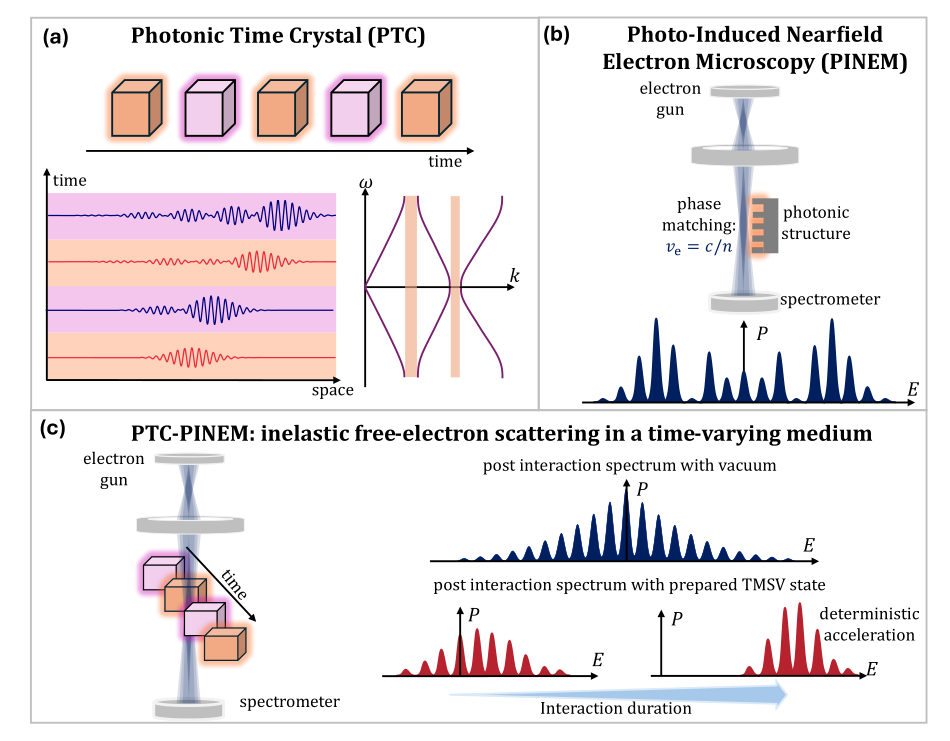
<figcaption class="paper-figure-caption"><b>Fig 1.</b> Fig. 1: Inelastic free-electron scattering in a photonic time-crystal. (a) Photonic time-crystal (PTC) formed by refractive index that is periodically modulated in time. The resulting Floquet states form a band structure with</figcaption>
</figure>
<figure class="paper-figure-card">
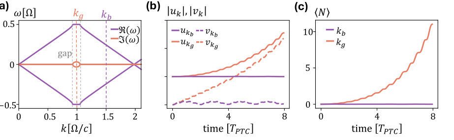
<figcaption class="paper-figure-caption"><b>Fig 2.</b> Fig. 2: Bogoliubov dynamics and exponential amplification in a PTC. (a) Bandstructure of PTC. Two modes are marked: 𝑘𝑔 inside the gap (orange) and 𝑘𝑏 outside the gap (violet). (b) Time evolution of Bogoliubov coefficients 𝑢𝑘(𝑡) and 𝑣𝑘(𝑡) for the band mode 𝑘𝑏 and the gap mode 𝑘𝑔. (c) Expectation value of the photon number, ⟨𝑁⟩= 2|𝑣𝑘(𝑡)|2, for the same two representative modes. While the band mode remains weakly populated, the gap mode experiences strong amplification even when the initial state of the field is vacuum. Effective PINEM scattering operator in a PTC. Using Eq. (4), we derive the scattering operator</figcaption>
</figure>
<figure class="paper-figure-card">

<figcaption class="paper-figure-caption"><b>Fig 3.</b> Fig. 3: Electron spectra as probes of PTC. (a) Post-interaction electron spectrum 𝑃(Δ𝑝) vs electron velocity 𝑣/𝑐, for modulation depths Δ𝑛/𝑛= 10% and 6%. Increasing the modulation depth strongly enhances the inelastic interaction, broadens the sidebands, and extends the scattering well beyond phase-matching conditions. (b) Effective coupling strength |𝑔𝑘𝑔| for a representative gap mode 𝑘𝑔, vs interaction duration and electron velocity 𝑣𝑒. The coupling is maximal near mean phase matching, 𝑣𝑒≃𝑐/⟨𝑛(𝑡)⟩, but grows strongly with interaction time even away from it due to the exponential amplification of the gap mode. (c) Electron spectrum versus photonic wavenumber 𝑘. Dashed vertical lines mark...</figcaption>
</figure>
<figure class="paper-figure-card">

<figcaption class="paper-figure-caption"><b>Fig 4.</b> Fig. 4: Wavefunction shaping through control of the mean recoil and its fluctuations. (a) Mean momentum transfer ⟨Δ𝑝⟩, vs electron velocity 𝑣/𝑐 and interaction duration. Positive and negative regions correspond to net acceleration and deceleration, respectively. The marked points 𝐴 and 𝐷 indicate representative working points used in panel (b). (b) Post-interaction electron spectra for the two points marked in (a), obtained for a suitably prepared TMSV optical state. The red curve ( 𝐴) corresponds to a directionally accelerated electron distribution, while the blue curve (𝐷) corresponds to deceleration.</figcaption>
</figure>
</div>

<p><strong>Summary.</strong> The paper demonstrates that Photonic Time-Crystals (PTCs) can dramatically enhance the coupling between free electrons and photons by exploiting exponentially growing field modes within photonic band gaps. This enhancement allows researchers to deterministically control the momentum kick imparted to electrons, opening a new quantum platform for shaping electron wavefunctions.</p>
<p><strong>Why it may be interesting.</strong> This work bridges concepts from Floquet engineering/PTCs with fundamental quantum optics problems like light-matter interaction, providing a novel platform for coherent energy/momentum transfer in condensed matter physics that has implications for ultrafast science.</p>
<details>
<summary>Detailed structure</summary>
<p><strong>Main problem.</strong> The study investigates how quantum interactions between free electrons and photons are modified when the photonic environment is periodically modulated using Photonic Time-Crystals (PTCs). The goal is to use this modulation to control electron momentum transfer.</p>
<p><strong>Main result.</strong> PTCs enable exponentially enhanced, controllable coupling for electron-light scattering, allowing for arbitrarily large and deterministically controlled momentum kicks to free electrons. Furthermore, nonclassical light states allow the momentum uncertainty to grow slower than the mean recoil, enabling directional wavefunction shaping.</p>
<p><strong>Method.</strong> The analysis uses a time-dependent Hamiltonian approach, employing Bogoliubov transformations to track photon field evolution in the presence of PTCs and deriving an effective scattering operator for electron interaction.</p>
<p><strong>Model / system.</strong> The system models free electrons propagating along $z$ interacting with photons confined by a periodically modulated refractive index (PTC). The dynamics are governed by a Hamiltonian involving free electron, time-dependent photonic, and interaction terms.</p>
<p><strong>Key observables.</strong> Photon number ($\langle N(t) 
angle$), effective coupling strengths ($g_{\pm k}$), mean momentum transfer ($\langle \Delta p 
angle$), and the post-interaction electron spectrum $P(\Delta p)$.</p>
<p><strong>Important parameters / regimes.</strong> PTC modulation period ($T_{PTC}$), interaction time, and the initial state of light (e.g., Two-Mode Squeezed Vacuum).</p>
<p><strong>Assumptions / limitations.</strong> The analysis assumes the system can be described by an effective scattering operator derived from the full Hamiltonian, and that the Bogoliubov coefficients govern the field dynamics.</p>
<p><strong>Figures summary.</strong> Figures illustrate PTC bandstructures showing momentum gaps where exponential growth of photon number occurs. They also show electron spectra exhibiting pronounced sideband ladders inside these gaps, demonstrating controlled wavefunction shaping via mean recoil vs. uncertainty plots.</p>
<p><strong>Paper structure.</strong> The paper first establishes the physical model using PTCs and the Hamiltonian. It then analyzes the Bogoliubov dynamics to show exponential field enhancement in momentum gaps. Finally, it applies this framework to derive an effective scattering operator for electron-light interaction (PINEM), demonstrating control over mean recoil and quantum state shaping.</p>
</details>
<details>
<summary>Abstract</summary>
<p>We study the quantum interaction between free electrons and photons in a time-varying media, and find that periodic modulation exponentially amplifies electron-photon coupling within momentum gaps, enabling arbitrarily large momentum transfer. By preparing the light in a two-mode squeezed vacuum state, the electron momentum grows faster than its spectral spreading, establishing time-modulated photonic media as a platform for accelerating free-electrons and shaping their quantum state.</p>
</details>
<p><sub><a href="#top">↑ back to top</a></sub></p>

<p><a id="paper-2606.23330"></a></p>
<h3 id="degeneracy-reshaped-spin-squeezing-in-high-spin-fermi-hubbard-systems-weakly-coupled-to-light"><a href="http://arxiv.org/abs/2606.23330v1">Degeneracy-reshaped spin squeezing in high-spin Fermi-Hubbard systems weakly coupled to light</a></h3>
<p><strong>Authors:</strong> Hubert Dunikowski, Emilia Witkowska<br>
<strong>Type:</strong> theory · <strong>Category:</strong> quantum gases · <strong>PDF:</strong> <a href="https://arxiv.org/pdf/2606.23330v1">https://arxiv.org/pdf/2606.23330v1</a><br>
<strong>Analysis basis:</strong> full PDF text, analyzed in chunks
<strong>Topic relevance:</strong> 🔥 <code>analog quantum simulation</code> <strong>4/5</strong> · <code>exotic spin models in light-matter</code> <strong>3/5</strong> · <code>spintronics-quantum-optics interface</code> <strong>3/5</strong> · <code>Tavis-Cummings &amp; cavity-many-emitter</code> <strong>2/5</strong> · <code>non-equilibrium dynamics</code> <strong>2/5</strong> · <code>Keldysh / 2PI / non-Gaussian methods</code> <strong>1/5</strong> · <code>correlated / nonlocal dissipation</code> <strong>1/5</strong> · <code>correlated cavity matter</code> <strong>1/5</strong> · <code>driven-dissipative phase transition</code> <strong>1/5</strong> · <code>entanglement &amp; information structure</code> <strong>1/5</strong> · <code>methods for driven-dissipative</code> <strong>1/5</strong></p>
<div class="figure-strip-hint">↔ Scroll figures horizontally</div>
<div class="paper-figures-scroll">
<figure class="paper-figure-card">

<figcaption class="paper-figure-caption"><b>Fig 1.</b> FIG. 1. Schematic of the processes considered with FH Hamil- tonian, highlighting on-site interactions U, tunnelling J be- tween neighboring atoms and coupling ˆVsoc with light. Mul- tiple atoms may occupy a lattice site j only at different mag- netic levels m, as required by Pauli exclusion.</figcaption>
</figure>
<figure class="paper-figure-card">

<figcaption class="paper-figure-caption"><b>Fig 2.</b> FIG. 3. Spin squeezing ξ2 and total spin ⟨ˆJ2⟩dynamics of the system with scalar-tensor light coupling ( ˆVst) for Ωst = 0.08J and other parameters as in Fig. 2. The solid blue and dashed orange lines overlap.</figcaption>
</figure>
<figure class="paper-figure-card">

<figcaption class="paper-figure-caption"><b>Fig 3.</b> FIG. 2. Spin squeezing ξ2 (top panels) and total spin ⟨ˆJ2⟩ (bottom panels) dynamics of the system with weak spin-orbit coupling ( ˆVsoc) for spin s = 1 (left panels) and s = 3/2 (right panels), and N = 10, U = 4J, Ωsoc = 0.08J, ϕ = 4 · 2π</figcaption>
</figure>
<figure class="paper-figure-card">

<figcaption class="paper-figure-caption"><b>Fig 4.</b> FIG. 4. Examples of the four dynamical descriptions considered in this work, ˆHFH+ ˆVsoc, ˆHSE+ ˆVsoc, ˆH(soc) GPES, and ˆH(soc) Dicke, shown on a common timescale determined by χ = 1/12 000, for different values of (U, Ωsoc). The dynamics generated by ˆHFH + ˆVsoc (solid red line) serve as the most accurate reference. The spin-exchange description ˆHSE + ˆVsoc remains quantitatively accurate for J/U ≲2.0, while the effective GPES Hamiltonian ˆH(soc) GPES reproduces ˆHSE + ˆVsoc dynamics for Ωsoc/Eq ≲0.05. Within the range of system sizes and atomic spins investigated, the bounds J/U ≲2.0 and Ωsoc/Eq ≲0.05 appear to be universal.</figcaption>
</figure>
</div>

<p><strong>Summary.</strong> The paper analyzes spin squeezing in high-spin Fermi-Hubbard systems coupled to light, finding that simple models fail due to internal degeneracies. The authors develop an effective framework using Population Eigenstates (PES) to accurately capture the modified collective spin dynamics caused by these uncaptured degenerate states.</p>
<p><strong>Why it may be interesting.</strong> This work is highly relevant as it addresses the limitations of standard collective spin approximations in complex, high-spin quantum systems, providing a necessary theoretical refinement for modeling light-matter interactions in ultracold atomic gases.</p>
<details>
<summary>Detailed structure</summary>
<p><strong>Main problem.</strong> The study investigates how spin squeezing dynamics are modified by internal degeneracies when analyzing high-spin Fermi-Hubbard systems weakly coupled to light.</p>
<p><strong>Main result.</strong> Degeneracy associated with the internal spin structure causes conventional maximal-spin descriptions (like those based on Dicke states) to break down, necessitating an effective framework built upon Population Eigenstates (PES).</p>
<p><strong>Method.</strong> The authors employ perturbative techniques, including Schrieffer-Wolff transformations, to derive effective Hamiltonians by projecting the full Hamiltonian onto various degenerate manifolds.</p>
<p><strong>Model / system.</strong> The system is a Fermi-Hubbard model realized with high-spin fermionic atoms in an optical lattice. The dynamics are governed by tunneling ($J$), on-site repulsion ($U$), and weak coupling to light ($\hat{V}_{soc}$).</p>
<p><strong>Key observables.</strong> Spin squeezing parameter ($\xi^2$) and total spin dynamics ($\langle\hat{\mathbf{J}}^2
angle$).</p>
<p><strong>Important parameters / regimes.</strong> High nuclear spin $s \ge 1$, strongly repulsive regime ($U \gg J$), and weak light coupling ($\Omega_{soc}$).</p>
<p><strong>Assumptions / limitations.</strong> The analysis relies on perturbative expansions (e.g., Schrieffer-Wolff up to second order) and the identification of different energy manifolds (Dicke, GPES, $q$-PES).</p>
<p><strong>Figures summary.</strong> Figures compare spin squeezing ($\xi^2$) and total spin dynamics for various approximations (full model vs. Dicke projection vs. GPES projection) across different high-spin regimes ($s=1, s=3/2$).</p>
<p><strong>Paper structure.</strong> The paper systematically compares the predictions of simple models (like OAT or Dicke projections) against the full dynamics derived from incorporating higher-order degenerate states captured by the Population Eigenstates basis.</p>
</details>
<details>
<summary>Abstract</summary>
<p>We study spin squeezing in strongly interacting high-spin Fermi-Hubbard systems weakly coupled to light. We show that spin squeezing dynamics is qualitatively modified by the degeneracies associated with the internal spin structure. We identify these degeneracies as the microscopic origin of the breakdown of conventional maximal-spin description and develop an effective framework based on population eigenstates that quantitatively reproduces spin squeezing evolution. Our results uncover a generic mechanism by which degeneracy reshapes collective spin dynamics.</p>
</details>
<p><sub><a href="#top">↑ back to top</a></sub></p>

<p><a id="paper-2606.23599"></a></p>
<h3 id="helical-domain-wall-ring-networks-reshape-superconducting-correlations"><a href="http://arxiv.org/abs/2606.23599v1">Helical Domain-Wall-Ring Networks Reshape Superconducting Correlations</a></h3>
<p><strong>Authors:</strong> Yi-Chun Hung, Arun Bansil<br>
<strong>Type:</strong> theory · <strong>Category:</strong> strongly correlated electrons · <strong>PDF:</strong> <a href="https://arxiv.org/pdf/2606.23599v1">https://arxiv.org/pdf/2606.23599v1</a><br>
<strong>Analysis basis:</strong> full PDF text, analyzed in chunks
<strong>Topic relevance:</strong> 🔥 <code>analog quantum simulation</code> <strong>4/5</strong> · <code>Keldysh / 2PI / non-Gaussian methods</code> <strong>3/5</strong> · <code>methods for driven-dissipative</code> <strong>3/5</strong> · <code>driven-dissipative phase transition</code> <strong>2/5</strong> · <code>non-equilibrium dynamics</code> <strong>2/5</strong> · <code>non-equilibrium universality</code> <strong>2/5</strong> · <code>Frenkel-Kontorova</code> <strong>1/5</strong> · <code>correlated / nonlocal dissipation</code> <strong>1/5</strong> · <code>correlated cavity matter</code> <strong>1/5</strong> · <code>entanglement &amp; information structure</code> <strong>1/5</strong></p>
<div class="figure-strip-hint">↔ Scroll figures horizontally</div>
<div class="paper-figures-scroll">
<figure class="paper-figure-card">

<figcaption class="paper-figure-caption"><b>Fig 1.</b> FIG. 1. A schematic of the helical domain-wall-ring network arising from closed topological domains (green regions) within the moir´e pattern, embedded in a trivial background (white regions). Red (blue) arrows denote counterclockwise (clock- wise) helical domain-wall states. Black arrows indicate the moir´e lattice vectors of length aM, while the dashed line marks the hexagon side length ls. ˆeθ ≡cos(θ)ˆex + sin(θ)ˆey. Inset: SC-pair tunneling with strength JSC between neighboring do- main walls; empty (filled) circles represent holes (particles).</figcaption>
</figure>
<figure class="paper-figure-card">

<figcaption class="paper-figure-caption"><b>Fig 2.</b> FIG. 2. Self-consistently determined (a) tunneling-induced mass ˜mJ = mJ/m(pin) J and (b) relative deviation of the SC scaling dimension from the pinned-limit value, δηSC =  ηSC −η(pin) SC  /  η(0) SC −η(pin) SC  , as functions of the bare pair-</figcaption>
</figure>
</div>

<p><strong>Summary.</strong> The paper theoretically analyzes superconducting correlations in helical domain-wall-ring networks found in moiré materials. It contrasts predictions from idealized infinite systems with results obtained using a self-consistent variational method for finite rings. The key finding is that the ring geometry leads to qualitatively different collective behavior, suggesting confinement effects are crucial and cannot be ignored.</p>
<p><strong>Why it may be interesting.</strong> This work provides a detailed theoretical framework for understanding how geometric confinement fundamentally alters many-body quantum phenomena, which is crucial knowledge when designing artificial superconducting circuits or moiré heterostructures.</p>
<details>
<summary>Detailed structure</summary>
<p><strong>Main problem.</strong> The study investigates how superconducting (SC) correlations are reshaped by confinement effects within helical domain-wall-ring networks compared to predictions from infinite-size models.</p>
<p><strong>Main result.</strong> Finite-size ring networks exhibit qualitatively distinct collective behavior, as the SC scaling dimension evolution does not simply follow the strong-coupling predictions derived for infinite systems.</p>
<p><strong>Method.</strong> The analysis combines Renormalization Group (RG) theory for initial insights with a self-consistent variational approach to handle finite-size effects in the bosonic field description of the system.</p>
<p><strong>Model / system.</strong> The physical platform is superconducting correlations within helical domain-wall-ring networks arising from moiré patterns in twisted bilayer honeycomb lattices. The model uses Luttinger Liquid theory for intra-ring physics and includes inter-ring tunneling terms.</p>
<p><strong>Key observables.</strong> SC scaling dimension ($\eta_{	ext{SC}}$), tunneling-induced mass parameter ($m_J$), and the SC correlation function decay $\langle O_{	ext{SC}}^\dagger(r) O_{	ext{SC}}(0) 
angle \sim r^{-2\eta_{	ext{SC}}}$</p>
<p><strong>Important parameters / regimes.</strong> Twist angle ($  heta_t$), inter-ring pair-tunneling strength ($   ilde{J}<em ext_RG="ext{RG">{   ext{SC}}$), and characteristic RG/critical angles ($ heta</em>$)}</p>
<p><strong>Assumptions / limitations.</strong> The analysis relies on bosonization techniques, variational approximations (Gaussian trial action), and comparing results across infinite-size limits versus finite ring geometries.</p>
<p><strong>Figures summary.</strong> Figures illustrate the self-consistently determined tunneling-induced mass ($  ilde{m}_J$) and the relative deviation of $\eta_{	ext{SC}}$ from the pinned limit as functions of bare tunneling strength and twist angle.</p>
<p><strong>Paper structure.</strong> The paper progresses through establishing bosonic field representations, deriving effective low-energy actions via perturbation theory (second order in tunneling), applying a variational minimization procedure to find self-consistent parameters ($m_J$), and finally calculating the SC correlation function ($\eta_{	ext{SC}}$).</p>
</details>
<details>
<summary>Abstract</summary>
<p>Extended domain-wall networks emerging in moiré materials provide a distinct platform for quasi-one-dimensional electronic states. However, the interaction-driven orders in confined networks remain largely unexplored. Here, we discuss superconducting (SC) correlations in interacting helical domain-wall-ring networks that emerge in the closed topological domains formed within the moiré patterns of an underlying twisted bilayer honeycomb lattice. We first analyze the system within the framework of an infinite-size theory and show that inter-ring SC-pair tunneling is renormalization-group relevant and thus enhances SC correlations through inter-ring phase locking. To address finite-size effects resulting from the ring-network geometry, we present a self-consistent variational approach. Our analysis shows that even in the regime where the infinite-size theory predicts strongly-coupled pair tunneling, the induced phase-locking scale remains strongly suppressed. In contrast, the SC scaling dimension continues to decrease with decreasing twist angle and remains insensitive to the pair-tunneling strength, revealing a qualitative mismatch from the infinite-size expectation. This discrepancy demonstrates that ring networks do not simply approach their infinite-size counterparts but can exhibit qualitatively distinct collective behavior. Our study highlights how the interplay of confinement effects and ring-network geometry can reshape SC correlations.</p>
</details>
<p><sub><a href="#top">↑ back to top</a></sub></p>

<p><a id="paper-2606.22233"></a></p>
<h3 id="open-quantum-system-theory-of-non-markovian-electron-phonon-dynamics"><a href="http://arxiv.org/abs/2606.22233v1">Open-quantum-system theory of non-Markovian electron-phonon dynamics</a></h3>
<p><strong>Authors:</strong> Gabriele Riva, Jacopo Simoni, Yuan Ping<br>
<strong>Type:</strong> theory · <strong>Category:</strong> other · <strong>PDF:</strong> <a href="https://arxiv.org/pdf/2606.22233v1">https://arxiv.org/pdf/2606.22233v1</a><br>
<strong>Analysis basis:</strong> full PDF text, analyzed in chunks
<strong>Topic relevance:</strong> 🔥 <code>methods for driven-dissipative</code> <strong>4/5</strong> · 🔥 <code>non-equilibrium dynamics</code> <strong>4/5</strong> · <code>Keldysh / 2PI / non-Gaussian methods</code> <strong>3/5</strong> · <code>correlated / nonlocal dissipation</code> <strong>3/5</strong> · <code>driven-dissipative phase transition</code> <strong>3/5</strong> · <code>Kondo &amp; dissipative impurity</code> <strong>2/5</strong> · <code>non-equilibrium universality</code> <strong>1/5</strong></p>
<div class="figure-strip-hint">↔ Scroll figures horizontally</div>
<div class="paper-figures-scroll">
<figure class="paper-figure-card">

<figcaption class="paper-figure-caption"><b>Fig 1.</b> FIG. 1. Diagrammatic representation of the electron-phonon correlation function. On the left, the self-energy derived from the coupling of Eq. (14d) with Eqs. (14a) and (14b), showing the link between our theory and the electronic and bosonic collision integrals. On the right, the Ehrenfest self-energy obtained from Eqs. (14e) and (15).</figcaption>
</figure>
<figure class="paper-figure-card">

<figcaption class="paper-figure-caption"><b>Fig 2.</b> FIG. 2. Dynamics of the occupation of the first site for dif- ferent level of theories. Exact dynamics (solid red curve), coherent phonons dynamics (dotted blue curve), and non- Markovian dynamics (dot-dashed green curve). The dynamics is obtained with λ = 0.5 and γ = 0.5</figcaption>
</figure>
<figure class="paper-figure-card">

<figcaption class="paper-figure-caption"><b>Fig 3.</b> FIG. 3. Spectra as a function of γ for small e-ph interaction λ = 0.05. (a) Exact result. (b) Coupled Eqs. (14a) and (14e). (c) Solution of the full set of non-Markovian equations (14a)-(14e). We observe single phonon absorption and emission (S) with slope ±γ starting from E = 4, and two-phonon absorption and emission (D) with slope ±2γ starting from E = 2, and a single phonon absorption starting (S) and a three-phonon absorption (T) from E = 0. This last contribution is visible only for γ &gt;∼1.</figcaption>
</figure>
<figure class="paper-figure-card">

<figcaption class="paper-figure-caption"><b>Fig 4.</b> FIG. 4. Spectra as a function of the dimensionless coupling constant λ. (a) Exact result. (b) Coupled Eqs. (14a) and (14e). (c) Solution of the full set of non-Markovian equations (14a)-(14e). The Non-Markovian result shows a broadening of the peaks similarly to the exact result, the coherent phonon-electron dynamics do not capture this feature.</figcaption>
</figure>
<figure class="paper-figure-card">

<figcaption class="paper-figure-caption"><b>Fig 5.</b> FIG. 5. Comparison between different energy contributions in Eq. (22). Black curve, total energy. Red, blue and green line, energy contributions of the electron, phonon and electron-phonon correlation, respectively. Left panel, exact result. Right panel, non-Markovian dynamics. Insets, zoom on the variation of the total energy due to the external pump. This plot is obtained for λ = 0.5 and γ = 0.5.</figcaption>
</figure>
</div>

<p><strong>Summary.</strong> The paper introduces an advanced, non-Markovian open quantum system theory to study electron-phonon interactions beyond simple approximations. By deriving a closed set of four coupled equations of motion, the authors successfully model complex memory effects and energy exchange in systems like polarons. This framework is validated by reproducing known theoretical limits and matching benchmark results from exact solutions.</p>
<p><strong>Why it may be interesting.</strong> This work provides a powerful, systematic theoretical framework for open quantum systems in condensed matter that naturally incorporates memory effects and treats coherence alongside dissipation, which is crucial for understanding polaron physics and ultrafast dynamics.</p>
<details>
<summary>Detailed structure</summary>
<p><strong>Main problem.</strong> Developing a fully quantum, non-perturbative treatment of nonequilibrium electron–phonon coupling that captures quantum coherence, memory effects, and dissipative dynamics.</p>
<p><strong>Main result.</strong> The proposed formalism successfully captures spectral broadening and energy conservation in comparison to simpler approximations, correctly modeling complex many-body correlations inherent in the system.</p>
<p><strong>Method.</strong> It employs an open quantum system theory approach using a closed set of four coupled equations of motion for reduced density matrices, avoiding the storage of two-time correlators.</p>
<p><strong>Model / system.</strong> The study models electron-phonon coupled systems, governed by a Hamiltonian including electronic, phonon, and coupling terms. It is benchmarked against the exact solution of the Holstein dimer under external driving fields.</p>
<p><strong>Key observables.</strong> Spectral functions (via Fourier transform of polarization P(t)), total energy conservation, and various self-energies (Fan-Migdal, RPA Polarization, Ehrenfest).</p>
<p><strong>Important parameters / regimes.</strong> Dimensionless coupling constants $\gamma = \omega_{	ext{ph}}/t_{	ext{hop}}$ and $\lambda = 2g^2/(t_{	ext{hop}}\omega_{	ext{ph}})$; the comparison between coherent vs. non-Markovian dynamics.</p>
<p><strong>Assumptions / limitations.</strong> The formalism involves truncating the hierarchy of equations at second order in the electron-phonon matrix element, while treating coherent and dissipative dynamics on an equal footing.</p>
<p><strong>Figures summary.</strong> Figure 1 diagrammatically shows how various self-energies arise from coupling different equations. Subsequent figures compare spectra obtained from exact solutions against those derived from the full non-Markovian set versus a simplified coherent approximation.</p>
<p><strong>Paper structure.</strong> The paper introduces the Hamiltonian and the need for a non-Markovian formalism, derives the closed set of four coupled equations of motion (EOMs), discusses how these EOMs recover known limits (Lindblad, Boltzmann, etc.), and finally applies the theory to benchmark against exact solutions using time evolution simulations.</p>
</details>
<details>
<summary>Abstract</summary>
<p>We present a non-Markovian open quantum dynamics formalism for the study of nonequilibrium electron-phonon interactions, based on a closed set of four coupled equations of motion for the electronic one-body reduced density matrix, the phonon density matrix, the coherent phonon, and the electron-phonon correlations. Memory effects in the electronic dynamics emerge naturally from the coupling between the electronic density matrix and the electron-phonon correlation equations, beyond the Markovian approximation. The formalism treats coherent-phonon dynamics and dissipative broadening on an equal footing, making it particularly suited to polaron formation and the finite lifetimes of driven electronic excitations. In appropriate limits it recovers the Fan-Migdal, polarization in random-phase-approximation, and Ehrenfest self-energies of nonequilibrium Green's function theory, as well as the Lindblad and Boltzmann equations, while avoiding the storage of two-time correlators. To drive the system out of equilibrium, we study its interaction with an external time-dependent field. As an illustrative application, we benchmark our theory against the exact solution of the Holstein dimer under a strong external perturbation, where the non-Markovian dynamics correctly captures dissipative spectral broadening and energy conservation.</p>
</details>
<p><sub><a href="#top">↑ back to top</a></sub></p>

<p><a id="paper-2606.22065"></a></p>
<h3 id="exact-accumulated-field-determined-steady-states-with-boundary-controlled-relaxation-in-dissipative-quantum-link-chains"><a href="http://arxiv.org/abs/2606.22065v1">Exact Accumulated-Field Determined Steady States with Boundary-Controlled Relaxation in Dissipative Quantum Link Chains</a></h3>
<p><strong>Authors:</strong> Yazhuang Miao, Weizh Ma, Yong Wang, Xiaolong Zhao, Xuexi Yi<br>
<strong>Type:</strong> theory · <strong>Category:</strong> disordered systems and neural networks · <strong>PDF:</strong> <a href="https://arxiv.org/pdf/2606.22065v1">https://arxiv.org/pdf/2606.22065v1</a><br>
<strong>Analysis basis:</strong> full PDF text, analyzed in chunks
<strong>Topic relevance:</strong> 🔥 <code>methods for driven-dissipative</code> <strong>4/5</strong> · <code>correlated / nonlocal dissipation</code> <strong>3/5</strong> · <code>driven-dissipative phase transition</code> <strong>3/5</strong> · <code>non-equilibrium dynamics</code> <strong>3/5</strong> · <code>non-equilibrium universality</code> <strong>2/5</strong> · <code>Frenkel-Kontorova</code> <strong>1/5</strong> · <code>Keldysh / 2PI / non-Gaussian methods</code> <strong>1/5</strong> · <code>Kondo &amp; dissipative impurity</code> <strong>1/5</strong> · <code>analog quantum simulation</code> <strong>1/5</strong></p>
<div class="figure-strip-hint">↔ Scroll figures horizontally</div>
<div class="paper-figures-scroll">
<figure class="paper-figure-card">

<figcaption class="paper-figure-caption"><b>Fig 1.</b> FIG. 1. Dissipative U(1) quantum link chain. Blue cir- cles denote matter spins τn, orange rectangles denote link spins sn,n+1, black curves denote the coherent coupling J, and red/blue arrows denote link pumping and loss.</figcaption>
</figure>
<figure class="paper-figure-card">

<figcaption class="paper-figure-caption"><b>Fig 2.</b> FIG. 2. Accumulated-field control of N ss n . In all panels, N ss n is plotted against the left axis and the accumulated field Xn against the right axis. (a) L = 7, N = 2: bars show OBC and CBC values of N ss n from exact diagonalization, markers show the corresponding values from exact symmetry-resolved steady states, and the dash-dotted curve shows Xn. (b) OBC N ss n from the exact reduced matter distribution for a sepa- rate L = 1001 realization at ν ≡N/L = 1/7, 2/7, 3/7, 4/7; the dash-dotted curve shows Xn for the same realization. (c) OBC N ss n from the exact reduced matter distribution for five realizations with L = 1001, N = 143; dash-dotted curves show the corresponding Xn....</figcaption>
</figure>
<figure class="paper-figure-card">

<figcaption class="paper-figure-caption"><b>Fig 3.</b> FIG. 3. Liouvillian spectra in the zero weak-gauge block at fixed matter number. Red: OBC. Blue: CBC. Black stars: exact OBC branch eigenvalues from Eq. (14). Green crosses: CBC branch eigenvalues obtained from the cycle-consistent branch assignments satisfying Eq. (15). The inset enlarges the zero-mode region. Parameters are the same as in Fig. 2(a).</figcaption>
</figure>
<figure class="paper-figure-card">

<figcaption class="paper-figure-caption"><b>Fig 4.</b> FIG. 4. Matter-occupation relaxation rates and Liouvillian gaps under OBC and reciprocal CBC. (a) Matter-occupation deviation δη ss(t) for one L = 7 realization. The inset shows Li- ouvillian eigenvalues near λ = 0, with arrows marking ∆OBC L and ∆CBC L . (b) Late-time relaxation rates κη versus gaps ∆η L. Open circles denote OBC, filled triangles denote CBC, colors distinguish L = 4, 5, 6, 7, and the dashed line marks κη = ∆η L. (c) CBC-to-OBC ratios R∆= ∆CBC L /∆OBC L and Rκ = κCBC/κOBC. Markers, thick bars, and thin error bars denote means, interquartile ranges, and standard errors, re- spectively. All fitted dynamics start from the two leftmost matter sites occupied, all other matter...</figcaption>
</figure>
</div>

<p><strong>Summary.</strong> The paper analyzes dissipative quantum link chains to decouple the steady-state properties from their relaxation dynamics. It shows that while boundary conditions can be modified (e.g., from open to cyclic) to maintain the same reduced matter occupation profile, they fundamentally change the system's Liouvillian spectrum and thus its approach rate to equilibrium. This separation is controlled by an accumulated field derived from local dissipation asymmetries.</p>
<p><strong>Why it may be interesting.</strong> This work provides a rigorous theoretical framework for separating the determination of equilibrium states from the rates at which those states are approached in open quantum systems, highly relevant for understanding engineered dissipation.</p>
<details>
<summary>Detailed structure</summary>
<p><strong>Main problem.</strong> The study investigates whether changes in boundary conditions (open vs. cyclic) affect both the steady state and the non-zero Liouvillian spectrum independently in dissipative quantum link chains.</p>
<p><strong>Main result.</strong> The accumulated field, derived from local dissipation asymmetries, determines the exact reduced matter steady state, while a reciprocal cyclic closure can preserve this steady occupation but significantly alter the relaxation rates (Liouvillian gap).</p>
<p><strong>Method.</strong> The authors use gauge-generated transformations to find symmetry-resolved steady states and compare Liouvillian spectra by analyzing the time evolution of deviations from equilibrium.</p>
<p><strong>Model / system.</strong> The system is a one-dimensional U(1) quantum link chain subjected to dissipation, modeled via a Lindbladian superoperator. The dynamics are analyzed in the fixed-matter number sector.</p>
<p><strong>Key observables.</strong> Reduced matter steady occupation ($\langle n 
angle_{ss}$), Liouvillian spectrum eigenvalues ($\lambda$), and relaxation rates ($\kappa_\eta$).</p>
<p><strong>Important parameters / regimes.</strong> Link-resolved dissipative asymmetries ($h_n$), the accumulated field ($X_n$), and the strong-dissipation limit.</p>
<p><strong>Assumptions / limitations.</strong> The analysis often projects onto a fixed eigenvalue $N$ of the total matter number operator $\hat{N}$.</p>
<p><strong>Figures summary.</strong> Figures compare steady occupations ($\langle n 
angle_{ss}$) for OBC vs. CBC, showing agreement in occupation but divergence in Liouvillian spectra and relaxation rates; Fig 4 compares fitted decay rates to spectral gaps.</p>
<p><strong>Paper structure.</strong> The paper establishes that the accumulated field dictates the steady state via a gauge transformation. It then constructs a cyclic boundary condition that preserves this steady state profile while modifying the non-zero Liouvillian spectrum, demonstrating a separation between steady-state control and relaxation dynamics.</p>
</details>
<details>
<summary>Abstract</summary>
<p>In open quantum lattice systems, changing the boundary condition would appear to alter both the steady state and the nonzero Liouvillian spectrum. Here we show that these two boundary-induced changes do not necessarily occur together in a globally reciprocal dissipative quantum link chain. The steady state is determined by an accumulated field defined by link-resolved dissipative asymmetries, and a gauge-generated transformation built from this field gives exact symmetry-resolved steady states with nonuniform, accumulated-field-dependent reduced matter occupations. We then construct a reciprocal cyclic boundary condition that preserves these matter occupations while changing the nonzero Liouvillian spectrum. Consequently, open and cyclic chains relax to the same reduced matter steady-occupation profile with different Liouvillian gaps, with the cyclic closure accelerating relaxation. In the strong-dissipation limit, this relaxation difference can be reduced to a spectral comparison of effective exclusion processes with open and cyclic boundaries.</p>
</details>
<p><sub><a href="#top">↑ back to top</a></sub></p>

<p><a id="paper-2606.22109"></a></p>
<h3 id="internal-state-criticality-in-bayesian-inverse-bayesian-inference"><a href="http://arxiv.org/abs/2606.22109v1">Internal-state criticality in Bayesian-inverse-Bayesian inference</a></h3>
<p><strong>Authors:</strong> Kazuto Sasai, Yukio-Pegio Gunji<br>
<strong>Type:</strong> theory · <strong>Category:</strong> statistical mechanics · <strong>PDF:</strong> <a href="https://arxiv.org/pdf/2606.22109v1">https://arxiv.org/pdf/2606.22109v1</a><br>
<strong>Analysis basis:</strong> full PDF text, analyzed in chunks
<strong>Topic relevance:</strong> 🔥 <code>non-equilibrium universality</code> <strong>4/5</strong> · <code>driven-dissipative phase transition</code> <strong>3/5</strong> · <code>entanglement &amp; information structure</code> <strong>2/5</strong> · <code>measurement-induced transitions</code> <strong>2/5</strong> · <code>non-equilibrium dynamics</code> <strong>2/5</strong> · <code>quantum measurements</code> <strong>2/5</strong> · <code>analog quantum simulation</code> <strong>1/5</strong> · <code>correlated / nonlocal dissipation</code> <strong>1/5</strong> · <code>methods for driven-dissipative</code> <strong>1/5</strong> · <code>scars &amp; prethermalization</code> <strong>1/5</strong></p>
<div class="figure-strip-hint">↔ Scroll figures horizontally</div>
<div class="paper-figures-scroll">
<figure class="paper-figure-card">

<figcaption class="paper-figure-caption"><b>Fig 1.</b> FIG. 1. Schematic of the Bayesian and inverse-Bayesian steps and the resulting internal-state critical dynamics. The Bayesian update (left) contracts the posterior, concentrating mass on data-supporting hypotheses. The inverse-Bayesian replacement (right) renews the hypothesis set, injecting a new hypothesis that reflects the recent empirical pattern. Together, the Bayesian concentration and the inverse-Bayesian renewal give rise to a critical state characterized by a power-law persistence-time distribution P(Targmax) ∼T −α, where Targmax is the number of consecutive steps the posterior’s most-probable hypothesis remains unchanged.</figcaption>
</figure>
<figure class="paper-figure-card">

<figcaption class="paper-figure-caption"><b>Fig 2.</b> FIG. 2. Hypothesis-space dynamics, BIB-BIB (left column) versus BO-BO (right column). Same random seed, rs design (random init, sample), Nh = 10, m = 50, T = 1500. (a, d) Hand sequence of agent A (R yellow, P blue, S green). (b, e) Posterior P(h) heatmap with the argmax trajectory overlaid (white line). (c, f) Top-3 P(h) trajectories with the uniform reference 1/Nh shown as a dotted line.</figcaption>
</figure>
<figure class="paper-figure-card">

<figcaption class="paper-figure-caption"><b>Fig 3.</b> FIG. 3. Design-independent collapse of the BIB argmax- persistence exponent and its absence under Bayes-only updat- ing. Argmax-persistence CCDFs, the four BIB-BIB designs (red) collapse onto a single heavy tail (α ≈1.43), whereas BO-BO (blue, random- versus structured-initialization fam- ilies) departs from a power law at the shortest persistence times. T = 2 × 105 × 20 runs, Nh = 10, m = 50.</figcaption>
</figure>
<figure class="paper-figure-card">

<figcaption class="paper-figure-caption"><b>Fig 4.</b> FIG. 4. Specificity of the critical class to the inverse-Bayesian rule among adaptive learners. Internal argmax-persistence CCDFs of BIB (red circles, shaded band over the four designs rs/ra/ss/sa) versus standard learners at Nh = 10, m = 50, T = 2 × 105 (40 seeds), showing the played-action run length for the reactive baselines Q-learning (blue triangles) and WSLS (green diamonds) and the argmax cumulative regret for regret matching (orange squares). (a) Against a uniform-random opponent. (b) In self-play. Dashed curves are truncated-power-law fits. The dotted guide is the on-off α = 3/2 slope.</figcaption>
</figure>
<figure class="paper-figure-card">

<figcaption class="paper-figure-caption"><b>Fig 5.</b> FIG. 5. Extrapolation of the argmax exponent to 3/2 as the finite-sample drift residual vanishes. Measured BIB-BIB argmax-persistence exponent αTPL (truncated-power-law fit over the [5, 104] power-law region, both agents pooled) versus the renewal residual (N −1)/(2m). Blue circles, rock–paper– scissors (N = 3) at observation windows m ∈{20, 50, 100} (error bars, SD over the four designs). Red square, match- ing pennies (N = 2, m = 50), which halves the residual at fixed m. The two routes coincide at equal residual, and the line is a least-squares fit through the converged points, ex- trapolating to α0 ≈1.49 at zero residual (star), close to the Sparre–Andersen 3/2 (dashed). The m = 10...</figcaption>
</figure>
</div>

<p><strong>Summary.</strong> This paper proposes Bayesian-inverse-Bayesian (BIB) inference as a generative model that naturally generates critical dynamics. By adding an inverse step to standard Bayesian updating, the system achieves a robust internal critical state characterized by heavy-tailed persistence statistics. This mechanism is argued to be fundamentally different from simple adaptive learning or external tuning parameters.</p>
<p><strong>Why it may be interesting.</strong> While not directly about quantum systems, the concept of 'internal-state criticality' arising from an information processing rule provides a powerful analogy for understanding non-equilibrium dynamics in complex quantum many-body systems or open quantum systems where measurement/feedback drives emergent order.</p>
<details>
<summary>Detailed structure</summary>
<p><strong>Main problem.</strong> To find a minimal generative model where criticality emerges intrinsically from the inference process itself, bridging game theory optimization with observed heavy-tailed decision statistics.</p>
<p><strong>Main result.</strong> Bayesian-inverse-Bayesian (BIB) inference maintains an internal critical state characterized by power-law persistence distributions ($\alpha \approx 1.43$) due to a boundary-reconstructing renewal mechanism.</p>
<p><strong>Method.</strong> The authors simulate the BIB update rule on repeated N-hand cyclic-dominance Rock-Paper-Scissors, comparing it against standard Bayes-only inference (BO).</p>
<p><strong>Model / system.</strong> The model is an adaptive learning process applied to a discrete game (N-hand RPS), where the core mechanism involves augmenting Bayesian updates with an inverse step that replaces low-support hypotheses with empirical observation histograms.</p>
<p><strong>Key observables.</strong> $  ext{argmax}$-persistence distribution exponent ($\alpha$), laminar phase length distribution, and posterior spread scaling ($\sigma \propto N^{-eta_h}$).</p>
<p><strong>Important parameters / regimes.</strong> Window size ($m$), number of hands ($N$), hypothesis count ($N_h$), and the residual drift term $(N-1)/(2m)$.</p>
<p><strong>Assumptions / limitations.</strong> The critical state is robustly characterized by the on-off intermittency class, suggesting a zero-drift internal mechanism rather than external tuning.</p>
<p><strong>Figures summary.</strong> Figures compare CCDFs of persistence times for BIB vs. BO, showing distinct heavy-tailed behavior; other figures illustrate parameter sweeps confirming robustness and convergence to theoretical exponents like $3/2$.</p>
<p><strong>Paper structure.</strong> The paper develops the argument by first defining the BIB mechanism, then analyzing its resulting power-law statistics across multiple axes (N, m, Nh), contrasting it with BO inference, and finally assigning the observed critical behavior to a specific internal renewal process.</p>
</details>
<details>
<summary>Abstract</summary>
<p>We propose Bayesian-inverse-Bayesian (BIB) inference in repeated games as a minimal generative model linking Bayesian inference, statistical mechanics, and heavy-tailed statistics. As a concrete instantiation we simulate repeated $N$-hand cyclic-dominance rock-paper-scissors, a discrete setting in which Nash-targeting algorithms collapse to uniform random play, so that any non-trivial dynamics must originate internally. Across a multi-axis sweep of design, window, and opponent conditions, the BIB dynamics remain in the same internal critical state, the argmax-persistence distribution staying a heavy-tailed power law with exponent $α\approx 1.43$ at the canonical window. Along the window and alphabet axes the exponent is not constant but drifts toward the universal $3/2$ as the finite-sample residual $(N-1)/(2m)$ vanishes. Bayes-only inference, which lacks the inverse step, shows no analogous universality and no power law. Because the argmax and laminar observables are first-passage reads of one driftless log-posterior walk, what is robust across conditions is the critical, zero-drift state itself, evidenced by the cross-design data collapse rather than by any particular exponent value. The state is also invariant across the hypothesis count $N_h$, with the cutoff time and posterior spread obeying finite-size scaling. Adding an inverse-Bayesian relaxation step (hypothesis renewal) to ordinary Bayesian inference is by itself enough to render the dynamics critical, with no external parameter adjustment. Rather than self-organizing toward an absorbing state, BIB reaches criticality by continually reconstructing the hypothesis-space boundary, a mechanism complementary to self-organized criticality that makes the criticality robust across a natural parameter range.</p>
</details>
<p><sub><a href="#top">↑ back to top</a></sub></p>

<p><a id="paper-2606.23324"></a></p>
<h3 id="fast-quantum-state-transfer-in-su-schrieffer-heeger-chains-beyond-the-noninteracting-regime"><a href="http://arxiv.org/abs/2606.23324v1">Fast quantum-state transfer in Su-Schrieffer-Heeger chains beyond the noninteracting regime</a></h3>
<p><strong>Authors:</strong> François Impens, David Guéry-Odelin<br>
<strong>Type:</strong> theory · <strong>Category:</strong> other · <strong>PDF:</strong> <a href="https://arxiv.org/pdf/2606.23324v1">https://arxiv.org/pdf/2606.23324v1</a><br>
<strong>Analysis basis:</strong> full PDF text, analyzed in chunks
<strong>Topic relevance:</strong> 🔥 <code>analog quantum simulation</code> <strong>4/5</strong> · <code>methods for driven-dissipative</code> <strong>3/5</strong> · <code>non-equilibrium dynamics</code> <strong>3/5</strong> · <code>driven-dissipative phase transition</code> <strong>2/5</strong> · <code>non-equilibrium universality</code> <strong>2/5</strong> · <code>Frenkel-Kontorova</code> <strong>1/5</strong> · <code>Keldysh / 2PI / non-Gaussian methods</code> <strong>1/5</strong> · <code>entanglement &amp; information structure</code> <strong>1/5</strong> · <code>quantum measurements</code> <strong>1/5</strong></p>
<div class="figure-strip-hint">↔ Scroll figures horizontally</div>
<div class="paper-figures-scroll">
<figure class="paper-figure-card">

<figcaption class="paper-figure-caption"><b>Fig 1.</b> FIG. 1. (a) Simple SSH chain with N = 2N0 −1 sites with t1 (purple) and t2 (green) NN hoppings. (b) SSH chain with a topological interface at the central BN0 site, with N = 4N0 −1 sites. In both SSH geometries, Nρ tunable NNN couplings ρn(t) connect adjacent sites of the A-sublattice, with Nρ = N0 −1 in the simple SSH chain and Nρ = 2N0 −1 in the topological-interface geometry. We first consider single- particle SSH chains with real-valued NNN couplings, and then extend the discussion to the many-particle case with phase- tunable complex-valued NNN couplings ρn(t).</figcaption>
</figure>
<figure class="paper-figure-card">

<figcaption class="paper-figure-caption"><b>Fig 2.</b> FIG. 3. Nonlinear NNN-assisted shortcut for state trans- fer through a topological SSH interface. (a) Prescribed NN couplings t1(t) (dashed black), t2L(t) (blue), and t2R(t) (red), defining the adiabatic passage across the interface. (b) Real quadratures ρR n (t) of the NNN couplings, which coincide with the linear inverse-engineered shortcut. (c) Imaginary quadra- tures ρI n(t) for the considered mean-field regime. (d) Popu- lations on the two end sites, showing near-perfect transfer across the interface. The blue and red curves correspond to the left and right end sites, respectively. The NN cou- plings are prescribed as t1(t) = t0, t2L(t) = t0Pδ(2t/T), and t2R(t) = t0Pδ(1) for 0 ≤t ≤T/2,...</figcaption>
</figure>
<figure class="paper-figure-card">

<figcaption class="paper-figure-caption"><b>Fig 3.</b> FIG. 2. Nonlinear NNN-assisted shortcut for state trans- fer in a simple SSH chain with N = 39 sites. (a) Pre- scribed nearest-neighbor couplings t1(t) (blue) and t2(t) (red) as a function of time, defining the adiabatic passage between the two end sites. (b) Real quadratures ρR n (t) of the NNN couplings, which coincide with the linear inverse-engineered shortcut. (c) Imaginary quadratures ρI n(t) for the considered mean-field regime. Panels (b,c) show the first five NNN hop- pings, ρ1 (purple), ρ2 (green), ρ3 (orange), ρ4 (brown), and ρ5 (olive) and use the same color code. (d) Populations on the left (blue) and right (red) end sites as a function of time, showing near-perfect transfer....</figcaption>
</figure>
<figure class="paper-figure-card">

<figcaption class="paper-figure-caption"><b>Fig 4.</b> FIG. 4. Full nonlinear vs real-valued shortcut in the non- linear mean-field dynamics: right-end population of the sim- ple (blue) and topological-interface (red) SSH chain as a func- tion of the rescaled time. Solid lines correspond to the full complex NNN couplings ρn(t) = ρR n (t) + iρI n(t), while dashed lines correspond to the real-valued shortcut ρn(t) = ρR n (t). In both geometries, adding the imaginary component restores near-perfect final-site population. Parameters identical to Figs. 2,3.</figcaption>
</figure>
<figure class="paper-figure-card">

<figcaption class="paper-figure-caption"><b>Fig 5.</b> FIG. 5. Many-body PMP protocol with complex site- dependent NNN controls in an SSH chain with a topologi- cal interface. The optimization is performed directly in the fixed-M Bose-Hubbard Fock sector for M = 2 bosons. (a) Real quadratures ρR n (t) of selected NNN couplings: ρR 1 (pur- ple), ρR 5 (green), and ρR 9 (orange). (b) Corresponding imag- inary quadratures ρI 1, ρI 5, and ρI 9, with the same color con- vention. (c) Time-dependent occupations of the initial and target edge sites, ⟨ˆn1⟩(blue) and ⟨ˆnN⟩(red). The dashed horizontal line indicates the total particle number M = 2. Topological-interface SSH chain with N = 19 sites (N0 = 5) and interaction strength g = 0.5 t0. The time...</figcaption>
</figure>
</div>

<p><strong>Summary.</strong> This paper develops advanced optimal control protocols to achieve fast and high-fidelity quantum state transfer in interacting SSH chains. By introducing complex, phase-tunable next-nearest-neighbor hoppings, the authors overcome nonlinear self-phase modulation effects that limit simpler mean-field shortcuts. The results confirm that precise control over hopping phases is crucial for realizing robust transport in strongly correlated topological matter.</p>
<p><strong>Why it may be interesting.</strong> This work provides a concrete demonstration of how engineering complex control fields (phase-tunable couplings) can overcome fundamental limitations imposed by interactions in topological quantum systems, which is highly relevant for designing robust quantum devices.</p>
<details>
<summary>Detailed structure</summary>
<p><strong>Main problem.</strong> The primary goal is accelerating quantum-state transfer (QST) in topological systems while maintaining high fidelity, especially when moving beyond the noninteracting regime.</p>
<p><strong>Main result.</strong> Complex, phase-tunable next-nearest-neighbor hoppings are identified as a key control resource that allows for near-perfect state transfer even in strongly interacting many-body regimes.</p>
<p><strong>Method.</strong> The study employs advanced optimal control theory, specifically Pontryagin Maximum Principle (PMP) optimization, applied to the Bose-Hubbard model dynamics.</p>
<p><strong>Model / system.</strong> The system is modeled using Su-Schrieffer-Heeger (SSH) chains, extended to include interactions via a time-dependent Bose-Hubbard Hamiltonian. The analysis progresses from single-particle approximations to full many-body Fock space optimization.</p>
<p><strong>Key observables.</strong> Transfer Fidelity ($F$), end-site populations ($\langle\hat{n}
angle$), and the required complex NNN coupling strengths ($
ho_{R,n}(t), 
ho_{I,n}(t)$).</p>
<p><strong>Important parameters / regimes.</strong> Interaction strength ($g$), particle number ($M$), and the ratio of hopping parameters ($\epsilon = |t_2/t_1|$).</p>
<p><strong>Assumptions / limitations.</strong> The analysis moves through approximations: single-particle $
ightarrow$ mean-field product state $
ightarrow$ full many-body Fock space optimization. The complex control approach is key to overcoming limitations in the mean-field picture.</p>
<p><strong>Figures summary.</strong> Figures illustrate the geometry of SSH chains with topological interfaces, showing prescribed NN hoppings and the engineered time-dependent real ($
ho_R$) and imaginary ($
ho_I$) components of the NNN couplings used for control.</p>
<p><strong>Paper structure.</strong> The paper builds logically by first establishing shortcuts in the noninteracting regime, then extending this to an exact nonlinear shortcut within the mean-field approximation using complex hoppings. Finally, it validates these findings by performing full many-body optimization using PMP in the Fock space.</p>
</details>
<details>
<summary>Abstract</summary>
<p>Shortcuts to adiabaticity have made topological edge-state transfer fast in the single-particle regime, but their extension to interacting systems is obstructed by nonlinear phase accumulation. We show that this obstruction can be removed in Su-Schrieffer-Heeger chains by making the next-nearest-neighbor shortcut hopping phase tunable. In the mean-field regime, this yields an exact nonlinear shortcut: one hopping quadrature keeps the state on the instantaneous dark-state trajectory, while the orthogonal quadrature cancels the interaction-induced self-phase modulation. The resulting protocol is nonperturbative in the mean-field interaction strength. When applied to the full Bose-Hubbard dynamics, the mean-field shortcut remains beneficial but saturates below unit fidelity, exposing genuinely many-body corrections beyond the product-state picture. We then optimize the transfer directly in the many-body Hilbert space and find that complex, phase-tunable next-nearest-neighbor hoppings recover near-perfect fidelity. Our results show that hopping phases are not merely a technical refinement, but a key control resource for fast and high-fidelity transport in interacting topological systems.</p>
</details>
<p><sub><a href="#top">↑ back to top</a></sub></p>

<p><a id="paper-2606.23454"></a></p>
<h3 id="improved-state-readout-in-nv-centers-using-regression-models-and-rabi-driving"><a href="http://arxiv.org/abs/2606.23454v1">Improved State Readout in NV Centers using Regression Models and Rabi Driving</a></h3>
<p><strong>Authors:</strong> Fritz Haltenberger, Manpreet Singh Jattana<br>
<strong>Type:</strong> experiment · <strong>Category:</strong> quantum information and computing · <strong>PDF:</strong> <a href="https://arxiv.org/pdf/2606.23454v1">https://arxiv.org/pdf/2606.23454v1</a><br>
<strong>Analysis basis:</strong> full PDF text, analyzed in chunks
<strong>Topic relevance:</strong> 🔥 <code>QC/QI experiment</code> <strong>4/5</strong> · <code>methods for driven-dissipative</code> <strong>3/5</strong> · <code>quantum measurements</code> <strong>3/5</strong> · <code>spintronics-quantum-optics interface</code> <strong>3/5</strong> · <code>measurement-induced transitions</code> <strong>2/5</strong> · <code>Keldysh / 2PI / non-Gaussian methods</code> <strong>1/5</strong> · <code>driven-dissipative phase transition</code> <strong>1/5</strong> · <code>quantum optics experiment</code> <strong>1/5</strong></p>
<div class="figure-strip-hint">↔ Scroll figures horizontally</div>
<div class="paper-figures-scroll">
<figure class="paper-figure-card">

<figcaption class="paper-figure-caption"><b>Fig 1.</b> FIG. 1. Prediction fidelities for eight models: Contrast method, Matrix method, Ridge regression, and Kernel Ridge regression (KRR), each evaluated using single-point (SP) and dynamical (Dyn) intensities. Boxplots show the distribution of fidelities across samples, with medians indicated by the red line, interquartile ranges by the boxes, and whiskers extend- ing to 1.5× the interquartile range.</figcaption>
</figure>
<figure class="paper-figure-card">

<figcaption class="paper-figure-caption"><b>Fig 2.</b> Figure 1 compares the distributions of the prediction fi- delities for all methods, with single-point intensities and dynamical intensities. For the dynamical measurement signals, we use NRabi = 10, and therefore d = 56. For Ridge regression, α = 0.03 was selected via hyperparam- eter optimization. Kernel Ridge regression uses α = 0.01 and γ = 1. For both regression methods, performance was evaluated using 10-fold cross-validation. The Ridge regression model with dynamical intensi- ties achieves a mean fidelity of 86% ± 13% (SD, N=491), significantly outperforming both the contrast and matrix methods, particularly when using dynamical intensities. The non-linear Kernel Ridge regression has...</figcaption>
</figure>
<figure class="paper-figure-card">

<figcaption class="paper-figure-caption"><b>Fig 3.</b> Figure 1 and table I both show that for all four meth- ods, using the dynamical intensities improves the aver- age fidelity, mean-squared error and the total variation distance. The improvement in prediction fidelity is rel- atively and absolutely larger for the regression methods than for the contrast and matrix methods. Figure 2 compares the fidelities achieved by all mod- els for various numbers of Rabi points used. Using one</figcaption>
</figure>
<figure class="paper-figure-card">

<figcaption class="paper-figure-caption"><b>Fig 4.</b> FIG. 2. Prediction fidelity as a function of the number of Rabi points used as input. For the contrast and matrix methods, a sine fit was performed on the first n points of the Rabi signal, with the fitted intercept taken as the intensity. For the regression models, the first n points were provided as input features to the model for training and inference. The fidelities were obtained through 10-fold cross-validation.</figcaption>
</figure>
<figure class="paper-figure-card">

<figcaption class="paper-figure-caption"><b>Fig 5.</b> FIG. 3. a): comparison of mean absolute error in prediction of each states’ population for each method. b): fidelity of predictions of each method considering only circuits with no two-qubit gates (left), one two-qubit gate (middle) and two- qubit gates (right). Both methods are based on the same cross-validation fidelities as before.</figcaption>
</figure>
</div>

<p><strong>Summary.</strong> This paper presents an improved method for reading out the state populations of NV center qubits at room temperature by employing data-driven regression models trained on experimental fluorescence signals. By incorporating measurements during induced Rabi oscillations, the authors show that these machine learning approaches achieve significantly higher readout fidelities compared to standard contrast calibration techniques. This paves the way for more reliable solid-state quantum memory and processing.</p>
<p><strong>Why it may be interesting.</strong> This work directly addresses a critical bottleneck in solid-state quantum computing: high-fidelity readout. For theorists working on open quantum systems, it provides empirical validation for using advanced ML techniques to model complex measurement backactions and decoherence effects.</p>
<details>
<summary>Detailed structure</summary>
<p><strong>Main problem.</strong> The primary challenge is achieving high-fidelity state readout of quantum populations in Nitrogen-Vacancy (NV) centers at room temperature.</p>
<p><strong>Main result.</strong> Data-driven regression models, especially those incorporating dynamical Rabi oscillation measurements, significantly outperform conventional contrast calibration methods for state readout fidelity.</p>
<p><strong>Method.</strong> The authors employ machine learning techniques, specifically Ridge and Kernel Ridge Regression, to map raw fluorescence signals onto ideal simulated quantum populations.</p>
<p><strong>Model / system.</strong> The system utilizes NV centers in diamond as a solid-state two-qubit quantum register. Readout relies on measuring spin-dependent photoluminescence at room temperature, which is complicated by phonon broadening.</p>
<p><strong>Key observables.</strong> Prediction fidelity $F(p^*, \hat{p})$, Mean Squared Error (MSE), and Total Variation Distance (TV distance) comparing predicted populations ($\hat{p}$) to ideal theoretical populations ($p^*$).</p>
<p><strong>Important parameters / regimes.</strong> Room temperature operation; external magnetic field ($B \approx 500	ext{ G}$); inclusion of Rabi oscillation measurements.</p>
<p><strong>Assumptions / limitations.</strong> Conventional methods assume simple linear relationships, while the ML approach assumes that a mapping function (approximated by regression) can accurately relate measured signals to true populations.</p>
<p><strong>Figures summary.</strong> Figures compare prediction fidelities across various readout models (Contrast vs. Regression) using single-point versus dynamical Rabi measurements; fidelity is shown to improve with more input features and training data size.</p>
<p><strong>Paper structure.</strong> The paper systematically compares multiple state reconstruction methods—including contrast, matrix inversion, Ridge, and KRR—evaluating their performance by incorporating enhanced measurement protocols derived from Rabi oscillations. The results demonstrate the superior robustness of the data-driven regression approaches.</p>
</details>
<details>
<summary>Abstract</summary>
<p>Readout of state populations in nitrogen-vacancy centers from fluorescence measurements at room-temperature is routinely achieved via contrast-based calibration. The fidelities achieved by this conventional approach are limited by reducing the dynamical fluorescence behaviour of the NV center to a scalar value, and calculating the population of each possible state independently. To address these limitations, we use regression models trained on experimental data to map the fluorescence signals onto ideal simulated populations. Additionally, we enhance the informational content of the fluorescence signals by performing measurements during induced Rabi oscillations. Our results demonstrate that including these dynamical signals significantly reduces state readout errors across multiple tested models. Notably, linear ridge regression performs nearly on par with a non-linear kernel-based model, showing that simple models already capture the relevant mapping between the enhanced fluorescence signals and the underlying state populations. This data-driven approach provides a robust alternative that achieves higher fidelities than conventional calibration in our setting, paving the way for high-fidelity state readout in solid-state quantum registers.</p>
</details>
<p><sub><a href="#top">↑ back to top</a></sub></p>

<p><a id="paper-2606.22071"></a></p>
<h3 id="iterative-quantum-phase-estimation-with-cqed-encoding"><a href="http://arxiv.org/abs/2606.22071v1">Iterative quantum phase estimation with cQED encoding</a></h3>
<p><strong>Authors:</strong> Changchun Zhong<br>
<strong>Type:</strong> theory · <strong>Category:</strong> other · <strong>PDF:</strong> <a href="https://arxiv.org/pdf/2606.22071v1">https://arxiv.org/pdf/2606.22071v1</a><br>
<strong>Analysis basis:</strong> full PDF text, analyzed in chunks
<strong>Topic relevance:</strong> 🔥 <code>quantum optics experiment</code> <strong>4/5</strong> · <code>analog quantum simulation</code> <strong>3/5</strong> · <code>quantum measurements</code> <strong>3/5</strong> · <code>QC/QI experiment</code> <strong>2/5</strong> · <code>measurement-induced transitions</code> <strong>2/5</strong> · <code>Tavis-Cummings &amp; cavity-many-emitter</code> <strong>1/5</strong> · <code>correlated cavity matter</code> <strong>1/5</strong> · <code>driven-dissipative phase transition</code> <strong>1/5</strong> · <code>methods for driven-dissipative</code> <strong>1/5</strong></p>
<div class="figure-strip-hint">↔ Scroll figures horizontally</div>
<div class="paper-figures-scroll">
<figure class="paper-figure-card">

<figcaption class="paper-figure-caption"><b>Fig 1.</b> FIG. 1. (a) Quantum circuit for standard QPE. (b) The jth stage of the binary-threshold-test-enabled-QPE. A bosonic mode is used to replace the ancilla qubits and the inverse QFT in standard QPE. The protocol is assisted by well-developed toolbox from c-QED. (c) Schematics for the iterative QPE with binary threshold test. The test result is sequentially feed forward to extract the phase information bit by bit, which is encoded in the mode frequency as ωj r = 0.ϕ1ϕ2...ϕj... (in binary fraction).</figcaption>
</figure>
<figure class="paper-figure-card">

<figcaption class="paper-figure-caption"><b>Fig 2.</b> FIG. 2. The numerical example for the protocol to estimate an eigenvalue. The true eigenvalue is chosen as λ = 0.11011011101. (a) The binary test tree, with the most probable path depicted in red. The path traces the best estimate of the eigenvalue. (b) The probability for all possible branches, up to the fourth fraction digits. It is shown that the branch 0.ϕ1ϕ2ϕ3ϕ4 = 0.1101, closely matching the true eigenvalue, is the most probable. In this example, the initial coherent state |α0 = 0.8⟩is used. The legend plot (1) inside shows the probability for the most probable branches as a function of the initial α0. It shows that the probability approaches one when the mode occupation number gets...</figcaption>
</figure>
</div>

<p><strong>Summary.</strong> The paper presents an alternative Quantum Phase Estimation algorithm for cQED that bypasses the need for deep circuits and inverse Quantum Fourier Transforms. It achieves optimal Heisenberg scaling by encoding phase information into a bosonic mode and reading it out through sequential binary threshold measurements. This offers a significantly more practical route toward high-precision quantum computation on superconducting circuit platforms.</p>
<p><strong>Why it may be interesting.</strong> This work directly addresses hardware overhead in quantum algorithms by mapping a complex algorithmic requirement (QFT) onto a physical measurement process inherent to cavity QED systems, making high-precision computation more feasible on current platforms.</p>
<details>
<summary>Detailed structure</summary>
<p><strong>Main problem.</strong> Conventional Quantum Phase Estimation (QPE) suffers from high circuit depth due to deep controlled-unitary operations and the inverse QFT.</p>
<p><strong>Main result.</strong> The authors propose a novel protocol achieving Heisenberg scaling in precision by replacing ancilla qubits and the inverse QFT with iterative binary threshold tests on a bosonic mode.</p>
<p><strong>Method.</strong> Phase extraction is performed sequentially through repeated homodyne measurements of a bosonic mode, determining one bit of the phase at each stage via adaptive frequency setting.</p>
<p><strong>Model / system.</strong> The protocol is implemented on a Circuit Quantum Electrodynamics (cQED) platform. The system dynamics are governed by a dispersive coupling Hamiltonian involving a bosonic mode acting as quantum memory.</p>
<p><strong>Key observables.</strong> The sign of the phase-space rotation ($    ext{sign}(\Delta_j)$) determined via homodyne detection provides the binary digit $\phi_j$.</p>
<p><strong>Important parameters / regimes.</strong> Heisenberg scaling in precision ($O(2^{-n})$), exponentially suppressed failure probability ($\delta$), and total evolution time $T \sim O(1/\epsilon)$.</p>
<p><strong>Assumptions / limitations.</strong> The analysis assumes high-fidelity dispersive readout techniques are available, and it neglects decoherence and bosonic-mode loss.</p>
<p><strong>Figures summary.</strong> Figure 1 compares standard QPE circuits to the proposed cQED binary threshold test. Figure 2 illustrates the iterative protocol using a binary test tree, showing probability distributions related to the phase estimation path.</p>
<p><strong>Paper structure.</strong> The paper introduces the limitations of conventional QPE, details the novel bosonic-based protocol involving sequential binary tests and homodyne measurements, analyzes the scaling laws for precision and failure probability, and concludes with numerical examples demonstrating optimal time complexity.</p>
</details>
<details>
<summary>Abstract</summary>
<p>Quantum phase estimation is a cornerstone algorithm for determining eigenvalues of unitary operators or Hamiltonians with Heisenberg-limited precision. Conventional implementations rely on deep controlled-unitary operations together with an inverse quantum Fourier transform, resulting in substantial circuit depth and hardware overhead. Here, we propose a conceptually simple and experimentally feasible alternative that exploits the toolbox of circuit quantum electrodynamics. The protocol extracts the phase through a sequence of binary threshold tests, eliminating the need for an inverse quantum Fourier transform. A bosonic mode serves as an efficient quantum memory in which the binary digits of the phase are encoded into the direction of phase-space rotations. These digits are then read out sequentially via high-fidelity homodyne measurements. We show that the protocol achieves Heisenberg scaling in estimation precision while simultaneously providing exponentially suppressed failure probability. By replacing the ancillary circuit with a bosonic degree of freedom, the scheme significantly reduces hardware complexity and offers a practical route toward implementing high-precision quantum phase estimation on circuit quantum electrodynamics platforms.</p>
</details>
<p><sub><a href="#top">↑ back to top</a></sub></p>
<hr>
<p>
<a href="index.html">← Index</a>
 · <a href="papers_02.html">Next →</a>
</p>
<hr>

</body>
</html>
